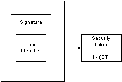

Web Services Security: SOAP Message Security Version 1.1.1
OASIS Standard
18 May 2012
Specification URIs
This version:
http://docs.oasis-open.org/wss-m/wss/v1.1.1/os/wss-SOAPMessageSecurity-v1.1.1-os.doc (Authoritative)
http://docs.oasis-open.org/wss-m/wss/v1.1.1/os/wss-SOAPMessageSecurity-v1.1.1-os.html
http://docs.oasis-open.org/wss-m/wss/v1.1.1/os/wss-SOAPMessageSecurity-v1.1.1-os.pdf
Previous version:
http://docs.oasis-open.org/wss-m/wss/v1.1.1/csd01/wss-SOAPMessageSecurity-v1.1.1-csd01.doc (Authoritative)
http://docs.oasis-open.org/wss-m/wss/v1.1.1/csd01/wss-SOAPMessageSecurity-v1.1.1-csd01.html
http://docs.oasis-open.org/wss-m/wss/v1.1.1/csd01/wss-SOAPMessageSecurity-v1.1.1-csd01.pdf
Latest version:
http://docs.oasis-open.org/wss-m/wss/v1.1.1/wss-SOAPMessageSecurity-v1.1.1.doc (Authoritative)
http://docs.oasis-open.org/wss-m/wss/v1.1.1/wss-SOAPMessageSecurity-v1.1.1.html
http://docs.oasis-open.org/wss-m/wss/v1.1.1/wss-SOAPMessageSecurity-v1.1.1.pdf
Technical Committee:
OASIS Web Services Security Maintenance (WSS-M) TC
Chair:
David Turner (david.turner@microsoft.com), Microsoft
Editors:
Anthony Nadalin (droldsecure@us.ibm.com), IBM
Chris Kaler (ckaler@microsoft.com), Microsoft
Ronald Monzillo (ronald.monzillo@sun.com), Sun Microsystems
Phillip Hallam-Baker (pbaker@verisign.com), Verisign
Carlo Milono (cmilono@tibco.com), Tibco
Additional artifacts:
Related work:
This specification supersedes:
Abstract:
This specification describes enhancements to SOAP messaging to provide message integrity and confidentiality. The specified mechanisms can be used to accommodate a wide variety of security models and encryption technologies.
This specification also provides a general-purpose mechanism for associating security tokens with message content. No specific type of security token is required, the specification is designed to be extensible (i.e.. support multiple security token formats). For example, a client might provide one format for proof of identity and provide another format for proof that they have a particular business certification.
Additionally, this specification describes how to encode binary security tokens, a framework for XML-based tokens, and how to include opaque encrypted keys. It also includes extensibility mechanisms that can be used to further describe the characteristics of the tokens that are included with a message.
This document integrates specific error corrections or editorial changes to the preceding specification, within the scope of the Web Services Security and this TC.
This document introduces a third digit in the numbering convention where the third digit represents a consolidation of error corrections, bug fixes or editorial formatting changes (e.g., 1.1.1); it does not add any new features beyond those of the base specifications (e.g., 1.1).
Status:
This document was last revised or approved by the membership of OASIS on the above date. The level of approval is also listed above. Check the Latest version location noted above for possible later revisions of this document.
Technical Committee members should send comments on this specification to the Technical Committees email list. Others should send comments to the Technical Committee by using the Send A Comment button on the Technical Committees web page at http://www.oasis-open.org/committees/wss-m/.
For information on whether any patents have been disclosed that may be essential to implementing this specification, and any offers of patent licensing terms, please refer to the Intellectual Property Rights section of the Technical Committee web page (http://www.oasis-open.org/committees/wss-m/ipr.php).
Citation format:
When referencing this specification the following citation format should be used:
[WSS-SOAP-Message-Security-V1.1.1]
Web Services Security: SOAP Message Security Version 1.1.1. 18 May 2012. OASIS Standard. http://docs.oasis-open.org/wss-m/wss/v1.1.1/os/wss-SOAPMessageSecurity-v1.1.1-os.html.
Notices
Copyright © OASIS Open 2012. All Rights Reserved.
All capitalized terms in the following text have the meanings assigned to them in the OASIS Intellectual Property Rights Policy (the "OASIS IPR Policy"). The full Policy may be found at the OASIS website.
This document and translations of it may be copied and furnished to others, and derivative works that comment on or otherwise explain it or assist in its implementation may be prepared, copied, published, and distributed, in whole or in part, without restriction of any kind, provided that the above copyright notice and this section are included on all such copies and derivative works. However, this document itself may not be modified in any way, including by removing the copyright notice or references to OASIS, except as needed for the purpose of developing any document or deliverable produced by an OASIS Technical Committee (in which case the rules applicable to copyrights, as set forth in the OASIS IPR Policy, must be followed) or as required to translate it into languages other than English.
The limited permissions granted above are perpetual and will not be revoked by OASIS or its successors or assigns.
This document and the information contained herein is provided on an "AS IS" basis and OASIS DISCLAIMS ALL WARRANTIES, EXPRESS OR IMPLIED, INCLUDING BUT NOT LIMITED TO ANY WARRANTY THAT THE USE OF THE INFORMATION HEREIN WILL NOT INFRINGE ANY OWNERSHIP RIGHTS OR ANY IMPLIED WARRANTIES OF MERCHANTABILITY OR FITNESS FOR A PARTICULAR PURPOSE.
OASIS requests that any OASIS Party or any other party that believes it has patent claims that would necessarily be infringed by implementations of this OASIS Committee Specification or OASIS Standard, to notify OASIS TC Administrator and provide an indication of its willingness to grant patent licenses to such patent claims in a manner consistent with the IPR Mode of the OASIS Technical Committee that produced this specification.
OASIS invites any party to contact the OASIS TC Administrator if it is aware of a claim of ownership of any patent claims that would necessarily be infringed by implementations of this specification by a patent holder that is not willing to provide a license to such patent claims in a manner consistent with the IPR Mode of the OASIS Technical Committee that produced this specification. OASIS may include such claims on its website, but disclaims any obligation to do so.
OASIS takes no position regarding the validity or scope of any intellectual property or other rights that might be claimed to pertain to the implementation or use of the technology described in this document or the extent to which any license under such rights might or might not be available; neither does it represent that it has made any effort to identify any such rights. Information on OASIS' procedures with respect to rights in any document or deliverable produced by an OASIS Technical Committee can be found on the OASIS website. Copies of claims of rights made available for publication and any assurances of licenses to be made available, or the result of an attempt made to obtain a general license or permission for the use of such proprietary rights by implementers or users of this OASIS Committee Specification or OASIS Standard, can be obtained from the OASIS TC Administrator. OASIS makes no representation that any information or list of intellectual property rights will at any time be complete, or that any claims in such list are, in fact, Essential Claims.
The name "OASIS" is a trademark of OASIS, the owner and developer of this specification, and should be used only to refer to the organization and its official outputs. OASIS welcomes reference to, and implementation and use of, specifications, while reserving the right to enforce its marks against misleading uses. Please see http://www.oasis-open.org/policies-guidelines/trademark for above guidance.
Table of Contents
2.3 Acronyms and Abbreviations
3 Message Protection Mechanisms
6.3.1 Attaching Security Tokens
6.3.2 Encoding Binary Security Tokens
6.6 Identifying and Referencing Security Tokens
7.1 SecurityTokenReference Element
8.5.1 Response Generation Rules
8.5.2 Response Processing Rules
9.4.3 Encryption with EncryptedHeader
9.4.4 Processing an EncryptedHeader
9.4.5 Processing the mustUnderstand attribute on EncryptedHeader
13.2 Additional Considerations
13.2.2 Combining Security Mechanisms
13.2.4 Protecting Security Tokens and Keys
13.2.5 Protecting Timestamps and Ids
13.2.6 Protecting against removal and modification of XML Elements
13.2.7 Detecting Duplicate Identifiers
C. Utility Elements and Attributes
D. SecurityTokenReference Model
This OASIS specification is the result of significant new work by the WSS Technical Committee and supersedes the input submissions, Web Service Security (WS-Security) Version 1.0 April 5, 2002 and Web Services Security Addendum Version 1.0 August 18, 2002.
This specification proposes a standard set of SOAP [SOAP11, SOAP12] extensions that can be used when building secure Web services to implement message content integrity and confidentiality. This specification refers to this set of extensions and modules as the Web Services Security: SOAP Message Security or WSS: SOAP Message Security.
This specification is flexible and is designed to be used as the basis for securing Web services within a wide variety of security models including PKI, Kerberos, and SSL. Specifically, this specification provides support for multiple security token formats, multiple trust domains, multiple signature formats, and multiple encryption technologies. The token formats and semantics for using these are defined in the associated profile documents.
This specification provides three main mechanisms: ability to send security tokens as part of a message, message integrity, and message confidentiality. These mechanisms by themselves do not provide a complete security solution for Web services. Instead, this specification is a building block that can be used in conjunction with other Web service extensions and higher-level application-specific protocols to accommodate a wide variety of security models and security technologies.
These mechanisms can be used independently (e.g., to pass a security token) or in a tightly coupled manner (e.g., signing and encrypting a message or part of a message and providing a security token or token path associated with the keys used for signing and encryption).
The goal of this specification is to enable applications to conduct secure SOAP message exchanges.
This specification is intended to provide a flexible set of mechanisms that can be used to construct a range of security protocols; in other words this specification intentionally does not describe explicit fixed security protocols.
As with every security protocol, significant efforts must be applied to ensure that security protocols constructed using this specification are not vulnerable to any one of a wide range of attacks. The examples in this specification are meant to illustrate the syntax of these mechanisms and are not intended as examples of combining these mechanisms in secure ways.
The focus of this specification is to describe a single-message security language that provides for message security that may assume an established session, security context and/or policy agreement.
The requirements to support secure message exchange are listed below.
The Web services security language must support a wide variety of security models. The following list identifies the key driving requirements for this specification:
The following topics are outside the scope of this document:
This section specifies the notations, namespaces, and terminology used in this specification.
The keywords "MUST", "MUST NOT", "REQUIRED", "SHALL", "SHALL NOT", "SHOULD", "SHOULD NOT", "RECOMMENDED", "MAY", and "OPTIONAL" in this document are to be interpreted as described in RFC 2119.
When describing abstract data models, this specification uses the notational convention used by the XML Infoset. Specifically, abstract property names always appear in square brackets (e.g., [some property]).
When describing concrete XML schemas, this specification uses a convention where each member of an elements [children] or [attributes] property is described using an XPath-like notation (e.g., /x:MyHeader/x:SomeProperty/@value1). The use of {any} indicates the presence of an element wildcard (<xs:any/>). The use of @{any} indicates the presence of an attribute wildcard (<xs:anyAttribute/>).
Readers are presumed to be familiar with the terms in the Internet Security Glossary [GLOS].
Namespace URIs (of the general form "some-URI") represents some application-dependent or context-dependent URI as defined in RFC 2396 [URI].
This specification is backwardly compatible with version 1.0. This means that URIs and schema elements defined in 1.0 remain unchanged and new schema elements and constants are defined using 1.1 namespaces and URIs.
The XML namespace URIs that MUST be used by implementations of this specification are as follows (note that elements used in this specification are from various namespaces):
http://docs.oasis-open.org/wss/2004/01/oasis-200401-wss-wssecurity-secext-1.0.xsd
http://docs.oasis-open.org/wss/2004/01/oasis-200401-wss-wssecurity-utility-1.0.xsd
http://docs.oasis-open.org/wss/oasis-wss-wssecurity-secext-1.1.xsd
This specification is designed to work with the general SOAP [SOAP11, SOAP12] message structure and message processing model, and should be applicable to any version of SOAP. The current SOAP 1.1 namespace URI is used herein to provide detailed examples, but there is no intention to limit the applicability of this specification to a single version of SOAP.
The namespaces used in this document are shown in the following table (note that for brevity, the examples use the prefixes listed below but do not include the URIs those listed below are assumed).
The URLs provided for the wsse and wsu namespaces can be used to obtain the schema files.
URI fragments defined in this document are relative to the following base URI unless otherwise stated:
http://docs.oasis-open.org/wss/2004/01/oasis-200401-wss-soap-message-security-1.0
The following (non-normative) table defines acronyms and abbreviations for this document.
|
Term |
Definition |
|
HMAC |
Keyed-Hashing for Message Authentication |
|
SHA-1 |
Secure Hash Algorithm 1 |
|
SOAP |
Simple Object Access Protocol |
|
URI |
Uniform Resource Identifier |
|
XML |
Extensible Markup Language |
Defined below are the basic definitions for the security terminology used in this specification.
Claim A claim is a declaration made by an entity (e.g. name, identity, key, group, privilege, capability, etc).
Claim Confirmation A claim confirmation is the process of verifying that a claim applies to an entity.
Confidentiality Confidentiality is the property that data is not made available to unauthorized individuals, entities, or processes.
Digest A digest is a cryptographic checksum of an octet stream.
Digital Signature A digital signature is a value computed with a cryptographic algorithm and bound to data in such a way that intended recipients of the data can use the digital signature to verify that the data has not been altered and/or has originated from the signer of the message, providing message integrity and authentication. The digital signature can be computed and verified with symmetric key algorithms, where the same key is used for signing and verifying, or with asymmetric key algorithms, where different keys are used for signing and verifying (a private and public key pair are used).
End-To-End Message Level Security - End-to-end message level security is established when a message that traverses multiple applications (one or more SOAP intermediaries) within and between business entities, e.g. companies, divisions and business units, is secure over its full route through and between those business entities. This includes not only messages that are initiated within the entity but also those messages that originate outside the entity, whether they are Web Services or the more traditional messages.
Integrity Integrity is the property that data has not been modified.
Message Confidentiality - Message Confidentiality is a property of the message and encryption is the mechanism by which this property of the message is provided.
Message Integrity - Message Integrity is a property of the message and digital signature is a mechanism by which this property of the message is provided.
Signature - In this document, signature and digital signature are used interchangeably and have the same meaning.
Security Token A security token represents a collection (one or more) of claims.
Signed Security Token A signed security token is a security token that is asserted and cryptographically signed by a specific authority (e.g. an X.509 certificate or a Kerberos ticket).
Trust - Trust is the characteristic that one entity is willing to rely upon a second entity to execute a set of actions and/or to make set of assertions about a set of subjects and/or scopes.
The examples which appear in this document are only intended to illustrate the correct syntax of the features being specified. The examples are NOT intended to necessarily represent best practice for implementing any particular security properties.
Specifically, the examples are constrained to contain only mechanisms defined in this document. The only reason for this is to avoid requiring the reader to consult other documents merely to understand the examples. It is NOT intended to suggest that the mechanisms illustrated represent best practice or are the strongest available to implement the security properties in question. In particular, mechanisms defined in other Token Profiles are known to be stronger, more efficient and/or generally superior to some of the mechanisms shown in the examples in this document.
When securing SOAP messages, various types of threats should be considered. This includes, but is not limited to:
To understand these threats this specification defines a message security model.
This document specifies an abstract message security model in terms of security tokens combined with digital signatures to protect and authenticate SOAP messages.
Security tokens assert claims and can be used to assert the binding between authentication secrets or keys and security identities. An authority can vouch for or endorse the claims in a security token by using its key to sign or encrypt (it is recommended to use a keyed encryption) the security token thereby enabling the authentication of the claims in the token. An X.509 [X509] certificate, claiming the binding between ones identity and public key, is an example of a signed security token endorsed by the certificate authority. In the absence of endorsement by a third party, the recipient of a security token may choose to accept the claims made in the token based on its trust of the producer of the containing message.
Signatures are used to verify message origin and integrity. Signatures are also used by message producers to demonstrate knowledge of the key, typically from a third party, used to confirm the claims in a security token and thus to bind their identity (and any other claims occurring in the security token) to the messages they create.
It should be noted that this security model, by itself, is subject to multiple security attacks. Refer to the Security Considerations section for additional details.
Where the specification requires that an element be "processed" it means that the element type MUST be recognized to the extent that an appropriate error is returned if the element is not supported.
Protecting the message content from being disclosed (confidentiality) or modified without detection (integrity) are primary security concerns. This specification provides a means to protect a message by encrypting and/or digitally signing a body, a header, or any combination of them (or parts of them).
Message integrity is provided by XML Signature [XMLSIG] in conjunction with security tokens to ensure that modifications to messages are detected. The integrity mechanisms are designed to support multiple signatures, potentially by multiple SOAP actors/roles, and to be extensible to support additional signature formats.
Message confidentiality leverages XML Encryption [XMLENC] in conjunction with security tokens to keep portions of a SOAP message confidential. The encryption mechanisms are designed to support additional encryption processes and operations by multiple SOAP actors/roles.
This document defines syntax and semantics of signatures within a <wsse:Security> element. This document does not constrain any signature appearing outside of a <wsse:Security> element.
A message recipient SHOULD reject messages containing invalid signatures, messages missing necessary claims or messages whose claims have unacceptable values. Such messages are unauthorized (or malformed). This specification provides a flexible way for the message producer to make a claim about the security properties by associating zero or more security tokens with the message. An example of a security claim is the identity of the producer; the producer can claim that he is Bob, known as an employee of some company, and therefore he has the right to send the message.
The following example illustrates the use of a custom security token and associated signature. The token contains base64 encoded binary data conveying a symmetric key which, we assume, can be properly authenticated by the recipient. The message producer uses the symmetric key with an HMAC signing algorithm to sign the message. The message receiver uses its knowledge of the shared secret to repeat the HMAC key calculation which it uses to validate the signature and in the process confirm that the message was authored by the claimed user identity.
(001) <?xml version="1.0" encoding="utf-8"?>
(002) <S11:Envelope xmlns:S11="..." xmlns:wsse="..." xmlns:wsu="..."
xmlns:ds="...">
(003) <S11:Header>
(004) <wsse:Security
xmlns:wsse="...">
(005) <wsse:BinarySecurityToken ValueType=" http://fabrikam123#CustomToken "
EncodingType="...#Base64Binary" wsu:Id=" MyID ">
(006) FHUIORv...
(007) </wsse:BinarySecurityToken>
(008) <ds:Signature>
(009) <ds:SignedInfo>
(010) <ds:CanonicalizationMethod
Algorithm=
"http://www.w3.org/2001/10/xml-exc-c14n#"/>
(011) <ds:SignatureMethod
Algorithm=
"http://www.w3.org/2000/09/xmldsig#hmac-sha1"/>
(012) <ds:Reference URI="#MsgBody">
(013) <ds:DigestMethod
Algorithm=
"http://www.w3.org/2000/09/xmldsig#sha1"/>
(014) <ds:DigestValue>LyLsF0Pi4wPU...</ds:DigestValue>
(015) </ds:Reference>
(016) </ds:SignedInfo>
(017) <ds:SignatureValue>DJbchm5gK...</ds:SignatureValue>
(018) <ds:KeyInfo>
(019) <wsse:SecurityTokenReference>
(020) <wsse:Reference URI="#MyID"/>
(021) </wsse:SecurityTokenReference>
(022) </ds:KeyInfo>
(023) </ds:Signature>
(024) </wsse:Security>
(025) </S11:Header>
(026) <S11:Body wsu:Id="MsgBody">
(027) <tru:StockSymbol
xmlns:tru="http://fabrikam123.com/payloads">
QQQ
</tru:StockSymbol>
(028) </S11:Body>
(029) </S11:Envelope>
The first two lines start the SOAP envelope. Line (003) begins the headers that are associated with this SOAP message.
Line (004) starts the <wsse:Security> header defined in this specification. This header contains security information for an intended recipient. This element continues until line (024).
Lines (005) to (007) specify a custom token that is associated with the message. In this case, it uses an externally defined custom token format.
Lines (008) to (023) specify a digital signature. This signature ensures the integrity of the signed elements. The signature uses the XML Signature specification identified by the ds namespace declaration in Line (002).
Lines (009) to (016) describe what is being signed and the type of canonicalization being used.
Line (010) specifies how to canonicalize (normalize) the data that is being signed. Lines (012) to (015) select the elements that are signed and how to digest them. Specifically, line (012) indicates that the <S11:Body> element is signed. In this example only the message body is signed; typically all critical elements of the message are included in the signature (see the Extended Example below).
Line (017) specifies the signature value of the canonicalized form of the data that is being signed as defined in the XML Signature specification.
Lines (018) to (022) provides information, partial or complete, as to where to find the security token associated with this signature. Specifically, lines (019) to (021) indicate that the security token can be found at (pulled from) the specified URL.
Lines (026) to (028) contain the body (payload) of the SOAP message.
There are many motivations for referencing other message elements such as signature references or correlating signatures to security tokens. For this reason, this specification defines the wsu:Id attribute so that recipients need not understand the full schema of the message for processing of the security elements. That is, they need only "know" that the wsu:Id attribute represents a schema type of ID which is used to reference elements. However, because some key schemas used by this specification don't allow attribute extensibility (namely XML Signature and XML Encryption), this specification also allows use of their local ID attributes in addition to the wsu:Id attribute and the xml:id attribute [XMLID]. As a consequence, when trying to locate an element referenced in a signature, the following attributes are considered (in no particular order):
In addition, when signing a part of an envelope such as the body, it is RECOMMENDED that an ID reference is used instead of a more general transformation, especially XPath [XPATH]. This is to simplify processing.
Tokens and elements that are defined in this specification and related profiles to use wsu:Id attributes SHOULD use wsu:Id. Elements to be signed MAY use xml:id [XMLID] or wsu:Id, and use of xml:id MAY be specified in profiles. All receivers MUST be able to identify XML elements carrying a wsu:Id attribute as representing an attribute of schema type ID and process it accordingly.
All receivers MAY be able to identify XML elements with a xml:id attribute as representing an ID attribute and process it accordingly. Senders SHOULD use wsu:Id and MAY use xml:id. Note that use of xml:id in conjunction with inclusive canonicalization may be inappropriate, as noted in [XMLID] and thus this combination SHOULD be avoided.
There are many situations where elements within SOAP messages need to be referenced. For example, when signing a SOAP message, selected elements are included in the scope of the signature. XML Schema Part 2 [XMLSCHEMA] provides several built-in data types that may be used for identifying and referencing elements, but their use requires that consumers of the SOAP message either have or must be able to obtain the schemas where the identity or reference mechanisms are defined. In some circumstances, for example, intermediaries, this can be problematic and not desirable.
Consequently a mechanism is required for identifying and referencing elements, based on the SOAP foundation, which does not rely upon complete schema knowledge of the context in which an element is used. This functionality can be integrated into SOAP processors so that elements can be identified and referred to without dynamic schema discovery and processing.
This section specifies a namespace-qualified global attribute for identifying an element which can be applied to any element that either allows arbitrary attributes or specifically allows a particular attribute.
Alternatively, the xml:id attribute MAY be used. Applications MUST NOT specify both a wsu:Id and xml:id attribute on a single element. It is an XML requirement that only one id attribute be specified on a single element.
To simplify the processing for intermediaries and recipients, a common attribute is defined for identifying an element. This attribute utilizes the XML Schema ID type and specifies a common attribute for indicating this information for elements.
The syntax for this attribute is as follows:
<anyElement wsu:Id="...">...</anyElement>
The following describes the attribute illustrated above:
.../@wsu:Id
This attribute, defined as type xsd:ID, provides a well-known attribute for specifying the local ID of an element.
Two wsu:Id attributes within an XML document MUST NOT have the same value. Implementations MAY rely on XML Schema validation to provide rudimentary enforcement for intra-document uniqueness. However, applications SHOULD NOT rely on schema validation alone to enforce uniqueness.
This specification does not specify how this attribute will be used and it is expected that other specifications MAY add additional semantics (or restrictions) for their usage of this attribute.
The following example illustrates use of this attribute to identify an element:
<x:myElement wsu:Id="ID1"
xmlns:x="..."
xmlns:wsu="..."/>
Conformant processors that do support XML Schema MUST treat this attribute as if it was defined using a global attribute declaration.
Conformant processors that do not support dynamic XML Schema or DTDs discovery and processing are strongly encouraged to integrate this attribute definition into their parsers. That is, to treat this attribute information item as if its PSVI has a [type definition] which {target namespace} is "http://www.w3.org/2001/XMLSchema" and which {type} is "ID." Doing so allows the processor to inherently know how to process the attribute without having to locate and process the associated schema. Specifically, implementations MAY support the value of the wsu:Id as the valid identifier for use as an XPointer [XPointer] shorthand pointer for interoperability with XML Signature references.
The <wsse:Security> header block provides a mechanism for attaching security-related information targeted at a specific recipient in the form of a SOAP actor/role. This may be either the ultimate recipient of the message or an intermediary. Consequently, elements of this type may be present multiple times in a SOAP message. An active intermediary on the message path MAY add one or more new sub-elements to an existing <wsse:Security> header block if they are targeted for its SOAP node or it MAY add one or more new headers for additional targets.
As stated, a message MAY have multiple <wsse:Security> header blocks if they are targeted for separate recipients. A message MUST NOT have multiple <wsse:Security> header blocks targeted (whether explicitly or implicitly) at the same recipient. However, only one <wsse:Security> header block MAY omit the S11:actor or S12:role attributes. Two <wsse:Security> header blocks MUST NOT have the same value for S11:actor or S12:role. Message security information targeted for different recipients MUST appear in different <wsse:Security> header blocks. This is due to potential processing order issues (e.g. due to possible header re-ordering). The <wsse:Security> header block without a specified S11:actor or S12:role MAY be processed by anyone, but MUST NOT be removed prior to the final destination or endpoint.
As elements are added to a <wsse:Security> header block, they SHOULD be prepended to the existing elements. As such, the <wsse:Security> header block represents the signing and encryption steps the message producer took to create the message. This prepending rule ensures that the receiving application can process sub-elements in the order they appear in the <wsse:Security> header block, because there will be no forward dependency among the sub-elements. Note that this specification does not impose any specific order of processing the sub-elements. The receiving application can use whatever order is required.
When a sub-element refers to a key carried in another sub-element (for example, a signature sub-element that refers to a binary security token sub-element that contains the X.509 certificate used for the signature), the key-bearing element SHOULD be ordered to precede the key-using
Element:
<S11:Envelope>
<S11:Header>
...
<wsse:Security S11:actor="..." S11:mustUnderstand="...">
...
</wsse:Security>
...
</S11:Header>
...
</S11:Envelope>
The following describes the attributes and elements listed in the example above:
/wsse:Security
This is the header block for passing security-related message information to a recipient.
/wsse:Security/@S11:actor
This attribute allows a specific SOAP 1.1 [SOAP11] actor to be identified. This attribute is optional; however, no two instances of the header block may omit an actor or specify the same actor.
/wsse:Security/@S12:role
This attribute allows a specific SOAP 1.2 [SOAP12] role to be identified. This attribute is optional; however, no two instances of the header block may omit a role or specify the same role.
/wsse:Security/@S11:mustUnderstand
This SOAP 1.1 [SOAP11] attribute is used to indicate whether a header entry is mandatory or optional for the recipient to process. The value of the mustUnderstand attribute is either "1" or "0". The absence of the SOAP mustUnderstand attribute is semantically equivalent to its presence with the value "0".
/wsse:Security/@S12:mustUnderstand
This SOAP 1.2 [SPOAP12] attribute is used to indicate whether a header entry is mandatory or optional for the recipient to process. The value of the mustUnderstand attribute is either "true", "1" "false" or "0". The absence of the SOAP mustUnderstand attribute is semantically equivalent to its presence with the value "false".
/wsse:Security/{any}
This is an extensibility mechanism to allow different (extensible) types of security information, based on a schema, to be passed. Unrecognized elements SHOULD cause a fault.
/wsse:Security/@{any}
This is an extensibility mechanism to allow additional attributes, based on schemas, to be added to the header. Unrecognized attributes SHOULD cause a fault.
All compliant implementations MUST be able to process a <wsse:Security> element.
All compliant implementations MUST declare which profiles they support and MUST be able to process a <wsse:Security> element including any sub-elements which may be defined by that profile. It is RECOMMENDED that undefined elements within the <wsse:Security> header not be processed.
The next few sections outline elements that are expected to be used within a <wsse:Security> header.
When a <wsse:Security> header includes a mustUnderstand="true" attribute:
This chapter specifies some different types of security tokens and how they are attached to messages.
This specification defines the <wsse:Security> header as a mechanism for conveying security information with and about a SOAP message. This header is, by design, extensible to support many types of security information.
For security tokens based on XML, the extensibility of the <wsse:Security> header allows for these security tokens to be directly inserted into the header.
This specification describes the processing rules for using and processing XML Signature and XML Encryption. These rules MUST be followed when using any type of security token. Note that if signature or encryption is used in conjunction with security tokens, they MUST be used in a way that conforms to the processing rules defined by this specification.
This specification does not dictate if and how claim confirmation must be done; however, it does define how signatures may be used and associated with security tokens (by referencing the security tokens from the signature) as a form of claim confirmation.
The <wsse:UsernameToken> element is introduced as a way of providing a username. This element is optionally included in the <wsse:Security> header.
The following illustrates the syntax of this element:
<wsse:UsernameToken wsu:Id="...">
<wsse:Username>...</wsse:Username>
</wsse:UsernameToken>
The following describes the attributes and elements listed in the example above:
/wsse:UsernameToken
This element is used to represent a claimed identity.
/wsse:UsernameToken/@wsu:Id
A string label for this security token. The wsu:Id allow for an open attribute model.
/wsse:UsernameToken/wsse:Username
This required element specifies the claimed identity.
/wsse:UsernameToken/wsse:Username/@{any}
This is an extensibility mechanism to allow additional attributes, based on schemas, to be added to the <wsse:Username> element.
/wsse:UsernameToken/{any}
This is an extensibility mechanism to allow different (extensible) types of security information, based on a schema, to be passed. Unrecognized elements SHOULD cause a fault.
/wsse:UsernameToken/@{any}
This is an extensibility mechanism to allow additional attributes, based on schemas, to be added to the <wsse:UsernameToken> element. Unrecognized attributes SHOULD cause a fault.
All compliant implementations MUST be able to process a <wsse:UsernameToken> element.
The following illustrates the use of this:
<S11:Envelope xmlns:S11="..." xmlns:wsse="...">
<S11:Header>
...
<wsse:Security>
<wsse:UsernameToken>
<wsse:Username>Zoe</wsse:Username>
</wsse:UsernameToken>
</wsse:Security>
...
</S11:Header>
...
</S11:Envelope>
For binary-formatted security tokens, this specification provides a <wsse:BinarySecurityToken> element that can be included in the <wsse:Security> header block.
Binary security tokens (e.g., X.509 certificates and Kerberos [KERBEROS] tickets) or other non-XML formats require a special encoding format for inclusion. This section describes a basic framework for using binary security tokens. Subsequent specifications MUST describe the rules for creating and processing specific binary security token formats.
The <wsse:BinarySecurityToken> element defines two attributes that are used to interpret it. The ValueType attribute indicates what the security token is, for example, a Kerberos ticket.
The EncodingType tells how the security token is encoded, for example Base64Binary.
The following is an overview of the syntax:
<wsse:BinarySecurityToken wsu:Id=...
EncodingType=...
ValueType=.../>
The following describes the attributes and elements listed in the example above:
/wsse:BinarySecurityToken
This element is used to include a binary-encoded security token.
/wsse:BinarySecurityToken/@wsu:Id
An optional string label for this security token.
/wsse:BinarySecurityToken/@ValueType
The ValueType attribute is used to indicate the "value space" of the encoded binary data (e.g. an X.509 certificate). The ValueType attribute allows a URI that defines the value type and space of the encoded binary data. Subsequent specifications MUST define the ValueType value for the tokens that they define. The usage of ValueType is RECOMMENDED.
/wsse:BinarySecurityToken/@EncodingType
The EncodingType attribute is used to indicate, using a URI, the encoding format of the binary data (e.g., base64 encoded). A new attribute is introduced, as there are issues with the current schema validation tools that make derivations of mixed simple and complex types difficult within XML Schema. The EncodingType attribute is interpreted to indicate the encoding format of the element. The following encoding formats are pre-defined:
|
URI |
Description |
|
#Base64Binary (default) |
XML Schema base 64 encoding |
/wsse:BinarySecurityToken/@{any}
This is an extensibility mechanism to allow additional attributes, based on schemas, to be added.
All compliant implementations MUST be able to process a <wsse:BinarySecurityToken> element.
This section presents a framework for using XML-based security tokens. Profile specifications describe rules and processes for specific XML-based security token formats.
In certain cases it is desirable that the token included in the <wsse:Security> header be encrypted for the recipient processing role. In such a case the <xenc:EncryptedData> element MAY be used to contain a security token and included in the <wsse:Security> header. That is this specification defines the usage of <xenc:EncryptedData> to encrypt security tokens contained in <wsse:Security> header.
It should be noted that token references are not made to the <xenc:EncryptedData> element, but instead to the token represented by the clear-text, once the <xenc:EncryptedData> element has been processed (decrypted). Such references utilize the token profile for the contained token. i.e., <xenc:EncryptedData> SHOULD NOT include an XML ID for referencing the contained security token.
All <xenc:EncryptedData> tokens SHOULD either have an embedded encryption key or should be referenced by a separate encryption key.
When a <xenc:EncryptedData> token is processed, it is replaced in the message infoset with its decrypted form.
This specification also defines multiple mechanisms for identifying and referencing security tokens using the wsu:Id attribute and the <wsse:SecurityTokenReference> element (as well as some additional mechanisms). Please refer to the specific profile documents for the appropriate reference mechanism. However, specific extensions MAY be made to the <wsse:SecurityTokenReference> element.
This chapter discusses and defines mechanisms for referencing security tokens and other key bearing elements..
Digital signature and encryption operations require that a key be specified. For various reasons, the element containing the key in question may be located elsewhere in the message or completely outside the message. The <wsse:SecurityTokenReference> element provides an extensible mechanism for referencing security tokens and other key bearing elements.
The <wsse:SecurityTokenReference> element provides an open content model for referencing key bearing elements because not all of them support a common reference pattern. Similarly, some have closed schemas and define their own reference mechanisms. The open content model allows appropriate reference mechanisms to be used.
If a <wsse:SecurityTokenReference> is used outside of the security header processing block the meaning of the response and/or processing rules of the resulting references MUST be specified by the the specific profile and are out of scope of this specification.
The following illustrates the syntax of this element:
<wsse:SecurityTokenReference wsu:Id="...", wsse11:TokenType="...", wsse:Usage="...", wsse:Usage="...">
</wsse:SecurityTokenReference>
The following describes the elements defined above:
/wsse:SecurityTokenReference
This element provides a reference to a security token.
/wsse:SecurityTokenReference/@wsu:Id
A string label for this security token reference which names the reference. This attribute does not indicate the ID of what is being referenced, that SHOULD be done using a fragment URI in a <wsse:Reference> element within the <wsse:SecurityTokenReference> element.
/wsse:SecurityTokenReference/@wsse11:TokenType
This optional attribute is used to identify, by URI, the type of the referenced token.
This specification recommends that token specific profiles define appropriate token type identifying URI values, and that these same profiles require that these values be specified in the profile defined reference forms.
When a wsse11:TokenType attribute is specified in conjunction with a wsse:KeyIdentifier/@ValueType attribute or a wsse:Reference/@ValueType
attribute that indicates the type of the referenced token, the security token type identified by the wsse11:TokenType attribute MUST be consistent with the security token type identified by the wsse:ValueType attribute.
|
URI |
Description |
|
http://docs.oasis-open.org/wss/oasis-wss-soap-message-security-1.1#EncryptedKey |
A token type of an <xenc:EncryptedKey> |
/wsse:SecurityTokenReference/@wsse:Usage
This optional attribute is used to type the usage of the <wsse:SecurityTokenReference>. Usages are specified using URIs and multiple usages MAY be specified using XML list semantics. No usages are defined by this specification.
/wsse:SecurityTokenReference/{any}
This is an extensibility mechanism to allow different (extensible) types of security references, based on a schema, to be passed. Unrecognized elements SHOULD cause a fault.
/wsse:SecurityTokenReference/@{any}
This is an extensibility mechanism to allow additional attributes, based on schemas, to be added to the header. Unrecognized attributes SHOULD cause a fault.
All compliant implementations MUST be able to process a <wsse:SecurityTokenReference> element.
This element can also be used as a direct child element of <ds:KeyInfo> to indicate a hint to retrieve the key information from a security token placed somewhere else. In particular, it is RECOMMENDED, when using XML Signature and XML Encryption, that a <wsse:SecurityTokenReference> element be placed inside a <ds:KeyInfo> to reference the security token used for the signature or encryption.
There are several challenges that implementations face when trying to interoperate. Processing the IDs and references requires the recipient to understand the schema. This may be an expensive task and in the general case impossible as there is no way to know the "schema location" for a specific namespace URI. As well, the primary goal of a reference is to uniquely identify the desired token. ID references are, by definition, unique by XML. However, other mechanisms such as "principal name" are not required to be unique and therefore such references may be not unique.
This specification allows for the use of multiple reference mechanisms within a single <wsse:SecurityTokenReference>. When multiple references are present in a given <wsse:SecurityTokenReference>, they MUST resolve to a single token in common. Specific token profiles SHOULD define the reference mechanisms to be used.
The following list provides a list of the specific reference mechanisms defined in WSS: SOAP Message Security in preferred order (i.e., most specific to least specific):
The <wsse:Reference> element provides an extensible mechanism for directly referencing security tokens using URIs.
The following illustrates the syntax of this element:
<wsse:SecurityTokenReference wsu:Id="...">
<wsse:Reference URI="..." ValueType="..."/>
</wsse:SecurityTokenReference>
The following describes the elements defined above:
/wsse:SecurityTokenReference/wsse:Reference
This element is used to identify an abstract URI location for locating a security token.
/wsse:SecurityTokenReference/wsse:Reference/@URI
This optional attribute specifies an abstract URI for a security token. If a fragment is specified, then it indicates the local ID of the security token being referenced. The URI MUST identify a security token. The URI MUST NOT identify a <wsse:SecurityTokenReference> element, a <wsse:Embedded> element, a <wsse:Reference> element, or a <wsse:KeyIdentifier> element.
/wsse:SecurityTokenReference/wsse:Reference/@ValueType
This optional attribute specifies a URI that is used to identify the type of token being referenced. This specification does not define any processing rules around the usage of this attribute, however, specifications for individual token types MAY define specific processing rules and semantics around the value of the URI and its interpretation. If this attribute is not present, the URI MUST be processed as a normal URI.
In this version of the specification the use of this attribute to identify the type of the referenced security token is deprecated. Profiles which require or recommend the use of this attribute to identify the type of the referenced security token SHOULD evolve to require or recommend the use of the wsse:SecurityTokenReference/@wsse11:TokenType attribute to identify the type of the referenced token.
/wsse:SecurityTokenReference/wsse:Reference/{any}
This is an extensibility mechanism to allow different (extensible) types of security references, based on a schema, to be passed. Unrecognized elements SHOULD cause a fault.
/wsse:SecurityTokenReference/wsse:Reference/@{any}
This is an extensibility mechanism to allow additional attributes, based on schemas, to be added to the header. Unrecognized attributes SHOULD cause a fault.
The following illustrates the use of this element:
<wsse:SecurityTokenReference
xmlns:wsse="...">
<wsse:Reference
URI="http://www.fabrikam123.com/tokens/Zoe"/>
</wsse:SecurityTokenReference>
Alternatively, if a direct reference is not used, then it is RECOMMENDED that a key identifier be used to specify/reference a security token instead of a <ds:KeyName>. A <wsse:KeyIdentifier> is a value that can be used to uniquely identify a security token (e.g. a hash of the important elements of the security token). The exact value type and generation algorithm varies by security token type (and sometimes by the data within the token), Consequently, the values and algorithms are described in the token-specific profiles rather than this specification.
The <wsse:KeyIdentifier> element SHALL be placed in the <wsse:SecurityTokenReference> element to reference a token using an identifier. This element SHOULD be used for all key identifiers.
The processing model assumes that the key identifier for a security token is constant. Consequently, processing a key identifier involves simply looking for a security token whose key identifier matches the specified constant. The <wsse:KeyIdentifier> element is only allowed inside a <wsse:SecurityTokenReference> element
The following is an overview of the syntax:
<wsse:SecurityTokenReference>
<wsse:KeyIdentifier wsu:Id="..."
ValueType="..."
EncodingType="...">
...
</wsse:KeyIdentifier>
</wsse:SecurityTokenReference>
The following describes the attributes and elements listed in the example above:
/wsse:SecurityTokenReference/wsse:KeyIdentifier
This element is used to include a binary-encoded key identifier.
/wsse:SecurityTokenReference/wsse:KeyIdentifier/@wsu:Id
An optional string label for this identifier.
/wsse:SecurityTokenReference/wsse:KeyIdentifier/@ValueType
The optional ValueType attribute is used to indicate the type of KeyIdentifier being used. This specification defines one ValueType that can be applied to all token types. Each specific token profile specifies the KeyIdentifier types that may be used to refer to tokens of that type. It also specifies the critical semantics of the identifier, such as whether the KeyIdentifier is unique to the key or the token. If no value is specified then the key identifier will be interpreted in an application-specific manner. This URI fragment is relative to a base URI as ndicated in the table below.
|
URI |
Description |
|
http://docs.oasis-open.org/wss/oasis-wss-soap-message-security-1.1#ThumbprintSHA1 |
If the security token type that the Security Token Reference refers to already contains a representation for the thumbprint, the value obtained from the token MAY be used. If the token does not contain a representation of a thumbprint, then the value of the KeyIdentifier MUST be the SHA1 of the raw octets which would be encoded within the security token element were it to be included. A thumbprint reference MUST occur in combination with a required to be supported (by the applicable profile) reference form unless a thumbprint reference is among the reference forms required to be supported by the applicable profile, or the parties to the communication have agreed to accept thumbprint only references. |
|
http://docs.oasis-open.org/wss/oasis-wss-soap-message-security-1.1#EncryptedKeySHA1 |
If the security token type that the Security Token Reference refers to already contains a representation for the EncryptedKey, the value obtained from the token MAY be used. If the token does not contain a representation of a EncryptedKey, then the value of the KeyIdentifier MUST be the SHA1 of the raw octets which would be encoded within the security token element were it to be included. |
/wsse:SecurityTokenReference/wsse:KeyIdentifier/@EncodingType
The optional EncodingType attribute is used to indicate, using a URI, the encoding format of the KeyIdentifier (#Base64Binary). This specification defines the EncodingType URI values appearing in the following table. A token specific profile MAY define additional token specific EncodingType URI values. A KeyIdentifier MUST include an EncodingType attribute when its ValueType is not sufficient to identify its encoding type. The base values defined in this specification are:
|
URI |
Description |
|
#Base64Binary |
XML Schema base 64 encoding |
/wsse:SecurityTokenReference/wsse:KeyIdentifier/@{any}
This is an extensibility mechanism to allow additional attributes, based on schemas, to be added.
In some cases a reference may be to an embedded token (as opposed to a pointer to a token that resides elsewhere). To do this, the <wsse:Embedded> element is specified within a <wsse:SecurityTokenReference> element. The <wsse:Embedded> element is only allowed inside a <wsse:SecurityTokenReference> element.
The following is an overview of the syntax:
<wsse:SecurityTokenReference>
<wsse:Embedded wsu:Id="...">
...
</wsse:Embedded>
</wsse:SecurityTokenReference>
The following describes the attributes and elements listed in the example above:
/wsse:SecurityTokenReference/wsse:Embedded
This element is used to embed a token directly within a reference (that is, to create a local or literal reference).
/wsse:SecurityTokenReference/wsse:Embedded/@wsu:Id
An optional string label for this element. This allows this embedded token to be referenced by a signature or encryption.
/wsse:SecurityTokenReference/wsse:Embedded/{any}
This is an extensibility mechanism to allow any security token, based on schemas, to be embedded. Unrecognized elements SHOULD cause a fault.
/wsse:SecurityTokenReference/wsse:Embedded/@{any}
This is an extensibility mechanism to allow additional attributes, based on schemas, to be added. Unrecognized attributes SHOULD cause a fault.
The following example illustrates embedding a SAML assertion:
<S11:Envelope xmlns:S11="..." xmlns:wsse="..." xmlns:wsu="...">
<S11:Header>
<wsse:Security>
...
<wsse:SecurityTokenReference>
<wsse:Embedded wsu:Id="tok1">
<saml:Assertion xmlns:saml="...">
...
</saml:Assertion>
</wsse:Embedded>
</wsse:SecurityTokenReference>
...
<wsse:Security>
</S11:Header>
...
</S11:Envelope>
The <ds:KeyInfo> element (from XML Signature) can be used for carrying the key information and is allowed for different key types and for future extensibility. However, in this specification, the use of <wsse:BinarySecurityToken> is the RECOMMENDED mechanism to carry key material if the key type contains binary data. Please refer to the specific profile documents for the appropriate way to carry key material.
The following example illustrates use of this element to fetch a named key:
<ds:KeyInfo Id="..." xmlns:ds="http://www.w3.org/2000/09/xmldsig#">
<ds:KeyName>CN=Hiroshi Maruyama, C=JP</ds:KeyName>
</ds:KeyInfo>
It is strongly RECOMMENDED to use <wsse:KeyIdentifier> elements. However, if key names are used, then it is strongly RECOMMENDED that <ds:KeyName> elements conform to the attribute names in section 2.3 of RFC 2253 (this is recommended by XML Signature for <ds:X509SubjectName>) for interoperability.
Additionally, e-mail addresses, SHOULD conform to RFC 822:
EmailAddress=ckaler@microsoft.com
In certain cases, an <xenc:EncryptedKey> element MAY be used to carry key material encrypted for the recipients key. This key material is henceforth referred to as EncryptedKey.
The EncryptedKey MAY be used to perform other cryptographic operations within the same message, such as signatures. The EncryptedKey MAY also be used for performing cryptographic operations in subsequent messages exchanged by the two parties. Two mechanisms are defined for referencing the EncryptedKey.
When referencing the EncryptedKey within the same message that contains the <xenc:EncryptedKey> element, the <ds:KeyInfo> element of the referencing construct MUST contain a <wsse:SecurityTokenReference>. The <wsse:SecurityTokenReference> element MUST contain a <wsse:Reference> element.
The URI attribute value of the <wsse:Reference> element MUST be set to the value of the ID attribute of the referenced <xenc:EncryptedKey> element that contains the EncryptedKey.
When referencing the EncryptedKey in a message that does not contain the <xenc:EncryptedKey> element, the <ds:KeyInfo> element of the referencing construct MUST contain a <wsse:SecurityTokenReference>. The <wsse:SecurityTokenReference> element MUST contain a <wsse:KeyIdentifier> element. The EncodingType attribute SHOULD be set to #Base64Binary. Other encoding types MAY be specified if agreed on by all parties. The wsse11:TokenType attribute MUST be set to
http://docs.oasis-open.org/wss/oasis-wss-soap-message-security-1.1#EncryptedKey.The identifier for a <xenc:EncryptedKey> token is defined as the SHA1 of the raw (pre-base64 encoding) octets specified in the <xenc:CipherValue> element of the referenced <xenc:EncryptedKey> token. This value is encoded as indicated in the <wsse:KeyIdentifier> reference. The <wsse:ValueType> attribute of <wsse:KeyIdentifier> MUST be set to http://docs.oasis-open.org/wss/oasis-wss-soap-message-security-1.1#EncryptedKeySHA1.
Message producers may want to enable message recipients to determine whether a message was altered in transit and to verify that the claims in a particular security token apply to the producer of the message.
Demonstrating knowledge of a confirmation key associated with a token key-claim confirms the accompanying token claims. Knowledge of a confirmation key may be demonstrated by using that key to create an XML Signature, for example. The relying partys acceptance of the claims may depend on its confidence in the token. Multiple tokens may contain a key-claim for a signature and may be referenced from the signature using a <wsse:SecurityTokenReference>. A key-claim may be an X.509 Certificate token, or a Kerberos service ticket token to give two examples.
Because of the mutability of some SOAP headers, producers SHOULD NOT use the Enveloped Signature Transform defined in XML Signature. Instead, messages SHOULD explicitly include the elements to be signed. Similarly, producers SHOULD NOT use the Enveloping Signature defined in XML Signature [XMLSIG].
This specification allows for multiple signatures and signature formats to be attached to a message, each referencing different, even overlapping, parts of the message. This is important for many distributed applications where messages flow through multiple processing stages. For example, a producer may submit an order that contains an orderID header. The producer signs the orderID header and the body of the request (the contents of the order). When this is received by the order processing sub-system, it may insert a shippingID into the header. The order sub-system would then sign, at a minimum, the orderID and the shippingID, and possibly the body as well. Then when this order is processed and shipped by the shipping department, a shippedInfo header might be appended. The shipping department would sign, at a minimum, the shippedInfo and the shippingID and possibly the body and forward the message to the billing department for processing. The billing department can verify the signatures and determine a valid chain of trust for the order, as well as who authorized each step in the process.
All compliant implementations MUST be able to support the XML Signature standard.
This specification builds on XML Signature and therefore has the same algorithm requirements as those specified in the XML Signature specification.
The following table outlines additional algorithms that are strongly RECOMMENDED by this specification:
|
Algorithm Type |
Algorithm |
Algorithm URI |
|
Canonicalization |
Exclusive XML Canonicalization |
As well, the following table outlines additional algorithms that MAY be used:
|
Algorithm Type |
Algorithm |
Algorithm URI |
|
Transform |
SOAP Message Normalization |
The Exclusive XML Canonicalization algorithm addresses the pitfalls of general canonicalization that can occur from leaky namespaces with pre-existing signatures.
Finally, if a producer wishes to sign a message before encryption, then following the ordering rules laid out in section 5, "Security Header", they SHOULD first prepend the signature element to the <wsse:Security> header, and then prepend the encryption element, resulting in a <wsse:Security> header that has the encryption element first, followed by the signature element:
|
<wsse:Security> header |
|
[encryption element] [signature element] . . |
Likewise, if a producer wishes to sign a message after encryption, they SHOULD first prepend the encryption element to the <wsse:Security> header, and then prepend the signature element. This will result in a <wsse:Security> header that has the signature element first, followed by the encryption element:
|
<wsse:Security> header |
|
[signature element] [encryption element] . . |
The XML Digital Signature WG has defined two canonicalization algorithms: XML Canonicalization and Exclusive XML Canonicalization. To prevent confusion, the first is also called Inclusive Canonicalization. Neither one solves all possible problems that can arise. The following informal discussion is intended to provide guidance on the choice of which one to use
in particular circumstances. For a more detailed and technically precise discussion of these issues see: [XML-C14N] and [EXCC14N].
There are two problems to be avoided. On the one hand, XML allows documents to be changed in various ways and still be considered equivalent. For example, duplicate namespace declarations can be removed or created. As a result, XML tools make these kinds of changes freely when processing XML. Therefore, it is vital that these equivalent forms match the same signature.
On the other hand, if the signature simply covers something like xx:foo, its meaning may change if xx is redefined. In this case the signature does not prevent tampering. It might be thought that the problem could be solved by expanding all the values in line. Unfortunately, there are mechanisms like XPATH which consider xx="http://example.com/"; to be different from yy="http://example.com/"; even though both xx and yy are bound to the same namespace.
The fundamental difference between the Inclusive and Exclusive Canonicalization is the namespace declarations which are placed in the output. Inclusive Canonicalization copies all the declarations that are currently in force, even if they are defined outside of the scope of the signature. It also copies any xml: attributes that are in force, such as xml:lang or xml:base. This guarantees that all the declarations you might make use of will be unambiguously specified. The problem with this is that if the signed XML is moved into another XML document which has other declarations, the Inclusive Canonicalization will copy then and the signature will be invalid. This can even happen if you simply add an attribute in a different namespace to the surrounding context.
Exclusive Canonicalization tries to figure out what namespaces you are actually using and just copies those. Specifically, it copies the ones that are "visibly used", which means the ones that are a part of the XML syntax. However, it does not look into attribute values or element content, so the namespace declarations required to process these are not copied. For example
if you had an attribute like xx:foo="yy:bar" it would copy the declaration for xx, but not yy. (This can even happen without your knowledge because XML processing tools might add xsi:type if you use a schema subtype.) It also does not copy the xml: attributes that are declared outside the scope of the signature.
Exclusive Canonicalization allows you to create a list of the namespaces that must be declared, so that it will pick up the declarations for the ones that are not visibly used. The only problem is that the software doing the signing must know what they are. In a typical SOAP software environment, the security code will typically be unaware of all the namespaces being used by the application in the message body that it is signing.
Exclusive Canonicalization is useful when you have a signed XML document that you wish to insert into other XML documents. A good example is a signed SAML assertion which might be inserted as a XML Token in the security header of various SOAP messages. The Issuer who signs the assertion will be aware of the namespaces being used and able to construct the list. The use of Exclusive Canonicalization will insure the signature verifies correctly every time.
Inclusive Canonicalization is useful in the typical case of signing part or all of the SOAP body in accordance with this specification. This will insure all the declarations fall under the signature, even though the code is unaware of what namespaces are being used. At the same time, it is less likely that the signed data (and signature element) will be inserted in some other XML document. Even if this is desired, it still may not be feasible for other reasons, for example there may be Id's with the same value defined in both XML documents.
In other situations it will be necessary to study the requirements of the application and the detailed operation of the canonicalization methods to determine which is appropriate.
This section is non-normative.
The <wsse:Security> header block MAY be used to carry a signature compliant with the XML Signature specification within a SOAP Envelope for the purpose of signing one or more elements in the SOAP Envelope. Multiple signature entries MAY be added into a single SOAP Envelope within one <wsse:Security> header block. Producers SHOULD sign all important elements of the message, and careful thought must be given to creating a signing policy that requires signing of parts of the message that might legitimately be altered in transit.
SOAP applications MUST satisfy the following conditions:
It is often desirable to sign security tokens that are included in a message or even external to the message. The XML Signature specification provides several common ways for referencing information to be signed such as URIs, IDs, and XPath, but some token formats may not allow tokens to be referenced using URIs or IDs and XPaths may be undesirable in some situations.
This specification allows different tokens to have their own unique reference mechanisms which are specified in their profile as extensions to the <wsse:SecurityTokenReference> element. This element provides a uniform referencing mechanism that is guaranteed to work with all token formats. Consequently, this specification defines a new reference option for XML Signature: the STR Dereference Transform.
This transform is specified by the URI #STR-Transform and when applied to a <wsse:SecurityTokenReference> element it means that the output is the token referenced by the <wsse:SecurityTokenReference> element not the element itself.
As an overview the processing model is to echo the input to the transform except when a <wsse:SecurityTokenReference> element is encountered. When one is found, the element is not echoed, but instead, it is used to locate the token(s) matching the criteria and rules defined by the <wsse:SecurityTokenReference> element and echo it (them) to the output. Consequently, the output of the transformation is the resultant sequence representing the input with any <wsse:SecurityTokenReference> elements replaced by the referenced security token(s) matched.
The following illustrates an example of this transformation which references a token contained within the message envelope:
...
<wsse:SecurityTokenReference wsu:Id="Str1">
...
</wsse:SecurityTokenReference>
...
<ds:Signature xmlns:ds="http://www.w3.org/2000/09/xmldsig#">
<ds:SignedInfo>
...
<ds:Reference URI="#Str1">
<ds:Transforms>
<ds:Transform
Algorithm="...#STR-Transform">
<wsse:TransformationParameters>
<ds:CanonicalizationMethod
Algorithm="http://www.w3.org/TR/2001/REC-xml-c14n-20010315" />
</wsse:TransformationParameters>
</ds:Transform>
</ds:Transforms>
<ds:DigestMethod Algorithm=
"http://www.w3.org/2000/09/xmldsig#sha1"/>
<ds:DigestValue>...</ds:DigestValue>
</ds:Reference>
</ds:SignedInfo>
<ds:SignatureValue></ds:SignatureValue>
</ds:Signature>
...
The following describes the attributes and elements listed in the example above:
/wsse:TransformationParameters
This element is used to wrap parameters for a transformation allows elements even from the XML Signature namespace.
/wsse:TransformationParameters/ds:Canonicalization
This specifies the canonicalization algorithm to apply to the selected data.
/wsse:TransformationParameters/{any}
This is an extensibility mechanism to allow different (extensible) parameters to be specified in the future. Unrecognized parameters SHOULD cause a fault.
/wsse:TransformationParameters/@{any}
This is an extensibility mechanism to allow additional attributes, based on schemas, to be added to the element in the future. Unrecognized attributes SHOULD cause a fault.
The following is a detailed specification of the transformation. The algorithm is identified by the URI: #STR-Transform.
Transform Input:
Transform Output:
Syntax:
Processing Rules:
Note: Per the processing rules above, any <wsse:SecurityTokenReference> element is effectively replaced by the referenced <wsse:BinarySecurityToken> element and then the <wsse:BinarySecurityToken> is canonicalized in that context. Each <wsse:BinarySecurityToken> needs to be complete in a given context, so any necessary namespace declarations that are not present on an ancestor element will need to be added to the <wsse:BinarySecurityToken> element prior to canonicalization.
Signing a <wsse:SecurityTokenReference> (STR) element provides authentication and integrity protection of only the STR and not the referenced security token (ST). If signing the ST is the intended behavior, the STR Dereference Transform (STRDT) may be used which replaces the STR with the ST for digest computation, effectively protecting the ST and not the STR. If protecting both the ST and the STR is desired, you may sign the STR twice, once using the STRDT and once not using the STRDT.
The following table lists the full URI for each URI fragment referred to in the specification.
|
URI Fragment |
Full URI |
|
#Base64Binary |
http://docs.oasis-open.org/wss/2004/01/oasis-200401-wss-soap-message-security-1.0#Base64Binary |
|
#STR-Transform |
http://docs.oasis-open.org/wss/2004/01/oasis-200401-wss-soap-message-security-1.0#STRTransform |
The validation of a <ds:Signature> element inside an <wsse:Security> header block MUST fail if:
If the validation of the signature element fails, applications MAY report the failure to the producer using the fault codes defined in Section 12 Error Handling.
The signature validation shall additionally adhere to the rules defines in signature confirmation section below, if the initiator desires signature confirmation:
In the general model, the initiator uses XML Signature constructs to represent message parts of the request that were signed. The manifest of signed SOAP elements is contained in the <ds:Signature> element which in turn is placed inside the <wsse:Security> header. The <ds:Signature> element of the request contains a <ds:SignatureValue>. This element contains a base64 encoded value representing the actual digital signature. In certain situations it is desirable that initiator confirms that the message received was generated in response to a message it initiated in its unaltered form. This helps prevent certain forms of attack. This specification introduces a <wsse11:SignatureConfirmation> element to address this necessity.
Compliant responder implementations that support signature confirmation, MUST include a <wsse11:SignatureConfirmation> element inside the <wsse:Security> header of the associated response message for every <ds:Signature> element that is a direct child of the <wsse:Security> header block in the originating message. The responder MUST include the contents of the <ds:SignatureValue> element of the request signature as the value of the @Value attribute of the <wsse11:SignatureConfirmation> element. The <wsse11:SignatureConfirmation> element MUST be included in the message signature of the associated response message.
If the associated originating signature is received in encrypted form then the corresponding <wsse11:SignatureConfirmation> element SHOULD be encrypted to protect the original signature and keys.
The schema outline for this element is as follows:
<wsse11:SignatureConfirmation wsu:Id="..." Value="..." />
/wsse11:SignatureConfirmation
This element indicates that the responder has processed the signature in the request. When this element is not present in a response the initiator SHOULD interpret that the responder is not compliant with this functionality.
/wsse11:SignatureConfirmation/@wsu:Id
Identifier to be used when referencing this element in the <ds:SignedInfo> reference list of the signature of the associated response message. This attribute MUST be present so that un-ambiguous references can be made to this <wsse11:SignatureConfirmation> element.
/wsse11:SignatureConfirmation/@Value
This optional attribute contains the contents of a <ds:SignatureValue> copied from the associated request. If the request was not signed, then this attribute MUST NOT be present. If this attribute is specified with an empty value, the initiator SHOULD interpret this as incorrect behavior and process accordingly. When this attribute is not present, the initiator SHOULD interpret this to mean that the response is based on a request that was not signed.
Conformant responders MUST include at least one <wsse11:SignatureConfirmation>. element in the <wsse:Security> header in any response(s) associated with requests. That is, the normal messaging patterns are not altered.
For every response message generated, the responder MUST include a <wsse11:SignatureConfirmation> element for every <ds:Signature> element it processed from the original request message. The Value attribute MUST be set to the exact value of the <ds:SignatureValue> element of the corresponding <ds:Signature> element. If no <ds:Signature> elements are present in the original request message, the responder MUST include exactly one <wsse11:SignatureConfirmation> element. The Value attribute of the <wsse11:SignatureConfirmation> element MUST NOT be present. The responder MUST include all <wsse11:SignatureConfirmation> elements in the message signature of the response message(s). If the <ds:Signature> element corresponding to a <wsse11:SignatureConfirmation> element was encrypted in the original request message, the <wsse11:SignatureConfirmation> element SHOULD be encrypted for the recipient of the response message(s).
The signature validation shall additionally adhere to the following processing guidelines, if the initiator desires signature confirmation:
The following sample message illustrates the use of integrity and security tokens. For this example, only the message body is signed.
<?xml version="1.0" encoding="utf-8"?>
<S11:Envelope xmlns:S11="..." xmlns:wsse="..." xmlns:wsu="..." xmlns:ds="...">
<S11:Header>
<wsse:Security>
<wsse:BinarySecurityToken
ValueType="http://docs.oasis-open.org/wss/2004/01/oasis-200401-wss-x509-token-profile-1.0#X509v3"
EncodingType="...#Base64Binary"
wsu:Id="X509Token">
MIIEZzCCA9CgAwIBAgIQEmtJZc0rqrKh5i...
</wsse:BinarySecurityToken>
<ds:Signature>
<ds:SignedInfo>
<ds:CanonicalizationMethod Algorithm=
"http://www.w3.org/2001/10/xml-exc-c14n#"/>
<ds:SignatureMethod
Algorithm=
"http://www.w3.org/2000/09/xmldsig#rsa-sha1"/>
<ds:Reference URI="#myBody">
<ds:Transforms>
<ds:Transform
Algorithm=
"http://www.w3.org/2001/10/xml-exc-c14n#"/>
</ds:Transforms>
<ds:DigestMethod
Algorithm=
"http://www.w3.org/2000/09/xmldsig#sha1"/>
<ds:DigestValue>EULddytSo1...</ds:DigestValue>
</ds:Reference>
</ds:SignedInfo>
<ds:SignatureValue>
BL8jdfToEb1l/vXcMZNNjPOV...
</ds:SignatureValue>
<ds:KeyInfo>
<wsse:SecurityTokenReference>
<wsse:Reference URI="#X509Token"/>
</wsse:SecurityTokenReference>
</ds:KeyInfo>
</ds:Signature>
</wsse:Security>
</S11:Header>
<S11:Body wsu:Id="myBody">
<tru:StockSymbol
xmlns:tru="http://www.fabrikam123.com/payloads">
QQQ
</tru:StockSymbol>
</S11:Body>
</S11:Envelope>
This specification allows encryption of any combination of body blocks, header blocks, and any of these sub-structures by either a common symmetric key shared by the producer and the recipient or a symmetric key carried in the message in an encrypted form.
In order to allow this flexibility, this specification leverages the XML Encryption standard. This specification describes how the two elements <xenc:ReferenceList> and <xenc:EncryptedKey> listed below and defined in XML Encryption can be used within the <wsse:Security> header block. When a producer or an active intermediary encrypts portion(s) of a SOAP message using XML Encryption it MUST prepend a sub-element to the <wsse:Security> header block. Furthermore, the encrypting party MUST either prepend the sub-element to an existing <wsse:Security> header block for the intended recipients or create a new <wsse:Security> header block and insert the sub-element. The combined process of encrypting portion(s) of a message and adding one of these sub-elements is called an encryption step hereafter. The sub-element MUST contain the information necessary for the recipient to identify the portions of the message that it is able to decrypt.
This specification additionally defines an element <wsse11:EncryptedHeader> for containing encrypted SOAP header blocks. This specification RECOMMENDS an additional mechanism that uses this element for encrypting SOAP header blocks that complies with SOAP processing guidelines while preserving the confidentiality of attributes on the SOAP header blocks.
All compliant implementations MUST be able to support the XML Encryption standard [XMLENC].
The <xenc:ReferenceList> element from XML Encryption [XMLENC] MAY be used to create a manifest of encrypted portion(s), which are expressed as <xenc:EncryptedData> elements within the envelope. An element or element content to be encrypted by this encryption step MUST be replaced by a corresponding <xenc:EncryptedData> according to XML Encryption. All the <xenc:EncryptedData> elements created by this encryption step SHOULD be listed in <xenc:DataReference> elements inside one or more <xenc:ReferenceList> element.
Although in XML Encryption [XMLENC], <xenc:ReferenceList> was originally designed to be used within an <xenc:EncryptedKey> element (which implies that all the referenced <xenc:EncryptedData> elements are encrypted by the same key), this specification allows that <xenc:EncryptedData> elements referenced by the same <xenc:ReferenceList> MAY be encrypted by different keys. Each encryption key can be specified in <ds:KeyInfo> within individual <xenc:EncryptedData>.
A typical situation where the <xenc:ReferenceList> sub-element is useful is that the producer and the recipient use a shared secret key. The following illustrates the use of this sub-element:
<S11:Envelope xmlns:S11="..." xmlns:wsse="..." xmlns:wsu="..." xmlns:ds="..." xmlns:xenc="...">
<S11:Header>
<wsse:Security>
<xenc:ReferenceList>
<xenc:DataReference URI="#bodyID"/>
</xenc:ReferenceList>
</wsse:Security>
</S11:Header>
<S11:Body>
<xenc:EncryptedData Id="bodyID">
<ds:KeyInfo>
<ds:KeyName>CN=Hiroshi Maruyama, C=JP</ds:KeyName>
</ds:KeyInfo>
<xenc:CipherData>
<xenc:CipherValue>...</xenc:CipherValue>
</xenc:CipherData>
</xenc:EncryptedData>
</S11:Body>
</S11:Envelope>
When the encryption step involves encrypting elements or element contents within a SOAP envelope with a symmetric key, which is in turn to be encrypted by the recipients key and embedded in the message, <xenc:EncryptedKey> MAY be used for carrying such an encrypted key. This sub-element MAY contain a manifest, that is, an <xenc:ReferenceList> element, that lists the portions to be decrypted with this key. The manifest MAY appear outside the <xenc:EncryptedKey> provided that the corresponding xenc:EncryptedData
elements contain <xenc:KeyInfo> elements that reference the <xenc:EncryptedKey> element.. An element or element content to be encrypted by this encryption step MUST be replaced by a corresponding <xenc:EncryptedData> according to XML Encryption. All the <xenc:EncryptedData> elements created by this encryption step SHOULD be listed in the <xenc:ReferenceList> element inside this sub-element.
This construct is useful when encryption is done by a randomly generated symmetric key that is in turn encrypted by the recipients public key. The following illustrates the use of this element:
<S11:Envelope xmlns:S11="..." xmlns:wsse="..." xmlns:wsu="..." xmlns:ds="..." xmlns:xenc="...">
<S11:Header>
<wsse:Security>
<xenc:EncryptedKey>
...
<ds:KeyInfo>
<wsse:SecurityTokenReference>
<ds:X509IssuerSerial>
<ds:X509IssuerName>
DC=ACMECorp, DC=com
</ds:X509IssuerName> <ds:X509SerialNumber>12345678</ds:X509SerialNumber>
</ds:X509IssuerSerial>
</wsse:SecurityTokenReference>
</ds:KeyInfo>
...
</xenc:EncryptedKey>
...
</wsse:Security>
</S11:Header>
<S11:Body>
<xenc:EncryptedData Id="bodyID">
<xenc:CipherData>
<xenc:CipherValue>...</xenc:CipherValue>
</xenc:CipherData>
</xenc:EncryptedData>
</S11:Body>
</S11:Envelope>
While XML Encryption specifies that <xenc:EncryptedKey> elements MAY be specified in <xenc:EncryptedData> elements, this specification strongly RECOMMENDS that <xenc:EncryptedKey> elements be placed in the <wsse:Security> header.
In order to be compliant with SOAP mustUnderstand processing guidelines and to prevent disclosure of information contained in attributes on a SOAP header block, this specification introduces an <wsse11:EncryptedHeader> element. This element contains exactly one <xenc:EncryptedData> element. This specification RECOMMENDS the use of <wsse11:EncryptedHeader> element for encrypting SOAP header blocks.
Encrypted parts or using one of the sub-elements defined above MUST be in compliance with the XML Encryption specification. An encrypted SOAP envelope MUST still be a valid SOAP envelope. The message creator MUST NOT encrypt the <S11:Header>, <S12:Header>, <S11:Envelope>, <S12:Envelope>,or <S11:Body>, <S12:Body> elements but MAY encrypt child elements of either the <S11:Header>, <S12:Header> and <S11:Body> or <S12:Body> elements. Multiple steps of encryption MAY be added into a single <wsse:Security> header block if they are targeted for the same recipient.
When an element or element content inside a SOAP envelope (e.g. the contents of the <S11:Body> or <S12:Body> elements) are to be encrypted, it MUST be replaced by an <xenc:EncryptedData>, according to XML Encryption and it SHOULD be referenced from the <xenc:ReferenceList> element created by this encryption step. If the target of reference is an EncryptedHeader as defined in section 9.3 above, see processing rules defined in section 9.5.3 Encryption using EncryptedHeader and section 9.5.4 Decryption of EncryptedHeader below.
The general steps (non-normative) for creating an encrypted SOAP message in compliance with this specification are listed below (note that use of <xenc:ReferenceList> is RECOMMENDED. Additionally, if the target of encryption is a SOAP header, processing rules defined in section 9.5.3 SHOULD be used).
On receiving a SOAP envelope containing encryption header elements, for each encryption header element the following general steps should be processed (this section is non-normative. Additionally, if the target of reference is an EncryptedHeader, processing rules as defined in section 9.5.4 below SHOULD be used):
When it is required that an entire SOAP header block including the top-level element and its attributes be encrypted, the original header block SHOULD be replaced with a <wsse11:EncryptedHeader> element. The <wsse11:EncryptedHeader> element MUST contain the <xenc:EncryptedData> produced by encrypting the header block. A wsu:Id attribute MAY be added to the <wsse11:EncryptedHeader> element for referencing. If the referencing <wsse:Security> header block defines a value for the <S12:mustUnderstand> or <S11:mustUnderstand> attribute, that attribute and associated value MUST be copied to the <wsse11:EncryptedHeader> element. If the referencing <wsse:Security> header block defines a value for the S12:role or S11:actor attribute, that attribute and associated value MUST be copied to the <wsse11:EncryptedHeader> element. If the referencing <wsse:Security> header block defines a value for the S12:relay attribute, that attribute and associated value MUST be copied to the <wsse11:EncryptedHeader> element.
Any header block can be replaced with a corresponding <wsse11:EncryptedHeader> header block. This includes <wsse:Security> header blocks. (In this case, obviously if the encryption operation is specified in the same security header or in a security header targeted at a node which is reached after the node targeted by the <wsse11:EncryptedHeader> element, the decryption will not occur.)
In addition, <wsse11:EncryptedHeader> header blocks can be super-encrypted and replaced by other <wsse11:EncryptedHeader> header blocks (for wrapping/tunneling scenarios). Any <wsse:Security> header that encrypts a header block targeted to a particular actor SHOULD be targeted to that same actor, unless it is a security header.
The processing model for <wsse11:EncryptedHeader> header blocks is as follows:
1. Resolve references to encrypted data specified in the <wsse:Security> header block targeted at this node. For each reference, perform the following steps.
2. If the referenced element does not have a qualified name of <wsse11:EncryptedHeader> then process as per section 9.4.2 Decryption and stop the processing steps here.
3. Otherwise, extract the <xenc:EncryptedData> element from the <wsse11:EncryptedHeader> element.
4. Decrypt the contents of the <xenc:EncryptedData> element as per section 9.4.2 Decryption and replace the <wsse11:EncryptedHeader> element with the decrypted contents.
5. Process the decrypted header block as per SOAP processing guidelines.
Alternatively, a processor may perform a pre-pass over the encryption references in the <wsse:Security> header:
1. Resolve references to encrypted data specified in the <wsse:Security> header block targeted at this node. For each reference, perform the following steps.
2. If a referenced element has a qualified name of <wsse11:EncryptedHeader> then replace the <wsse11:EncryptedHeader> element with the contained <xenc:EncryptedData> element and if present copy the value of the wsu:Id attribute from the <wsse11:EncryptedHeader> element to the <xenc:EncryptedData> element.
3. Process the <wsse:Security> header block as normal.
It should be noted that the results of decrypting a <wsse11:EncryptedHeader> header block could be another <wsse11:EncryptedHeader> header block. In addition, the result MAY be targeted at a different role than the role processing the <wsse11:EncryptedHeader> header block.
If the S11:mustUnderstand or S12:mustUnderstand attribute is specified on the <wsse11:EncryptedHeader> header block, and is true, then the following steps define what it means to "understand" the <wsse11:EncryptedHeader> header block:
1. The processor MUST be aware of this element and know how to decrypt and convert into the original header block. This DOES NOT REQUIRE that the process know that it has the correct keys or support the indicated algorithms.
2. The processor MUST, after decrypting the encrypted header block, process the decrypted header block according to the SOAP processing guidelines. The receiver MUST raise a fault if any content required to adequately process the header block remains encrypted or if the decrypted SOAP header is not understood and the value of the S12:mustUnderstand or S11:mustUnderstand attribute on the decrypted header block is true. Note that in order to comply with SOAP processing rules in this case, the processor must roll back any persistent effects of processing the security header, such as storing a received token.
It is often important for the recipient to be able to determine the freshness of security semantics. In some cases, security semantics may be so stale that the recipient may decide to ignore it.
This specification does not provide a mechanism for synchronizing time. The assumption is that time is trusted or additional mechanisms, not described here, are employed to prevent replay.
This specification defines and illustrates time references in terms of the xsd:dateTime type defined in XML Schema. It is RECOMMENDED that all time references use this type. All references MUST be in UTC time. Implementations MUST NOT generate time instants that specify leap seconds. If, however, other time types are used, then the ValueType attribute (described below) MUST be specified to indicate the data type of the time format. Requestors and receivers SHOULD NOT rely on other applications supporting time resolution finer than milliseconds.
The <wsu:Timestamp> element provides a mechanism for expressing the creation and expiration times of the security semantics in a message.
All times MUST be in UTC format as specified by the XML Schema type (dateTime). It should be noted that times support time precision as defined in the XML Schema specification.
The <wsu:Timestamp> element is specified as a child of the <wsse:Security> header and may only be present at most once per header (that is, per SOAP actor/role).
The ordering within the element is as illustrated below. The ordering of elements in the <wsu:Timestamp> element is fixed and MUST be preserved by intermediaries.
The schema outline for the <wsu:Timestamp> element is as follows:
<wsu:Timestamp wsu:Id="...">
<wsu:Created ValueType="...">...</wsu:Created>
<wsu:Expires ValueType="...">...</wsu:Expires>
...
</wsu:Timestamp>
The following describes the attributes and elements listed in the schema above:
/wsu:Timestamp
This is the element for indicating security semantics timestamps.
/wsu:Timestamp/wsu:Created
This represents the creation time of the security semantics. This element is optional, but can only be specified once in a <wsu:Timestamp> element. Within the SOAP processing model, creation is the instant that the infoset is serialized for transmission. The creation time of the message SHOULD NOT differ substantially from its transmission time. The difference in time should be minimized.
/wsu:Timestamp/wsu:Expires
This element represents the expiration of the security semantics. This is optional, but can appear at most once in a <wsu:Timestamp> element. Upon expiration, the requestor asserts that its security semantics are no longer valid. It is strongly RECOMMENDED that recipients (anyone who processes this message) discard (ignore) any message whose security semantics have passed their expiration. A Fault code (wsu:MessageExpired) is provided if the recipient wants to inform the requestor that its security semantics were expired. A service MAY issue a Fault indicating the security semantics have expired.
/wsu:Timestamp/{any}
This is an extensibility mechanism to allow additional elements to be added to the element. Unrecognized elements SHOULD cause a fault.
/wsu:Timestamp/@wsu:Id
This optional attribute specifies an XML Schema ID that can be used to reference this element (the timestamp). This is used, for example, to reference the timestamp in a XML Signature.
/wsu:Timestamp/@{any}
This is an extensibility mechanism to allow additional attributes to be added to the element. Unrecognized attributes SHOULD cause a fault.
The expiration is relative to the requestor's clock. In order to evaluate the expiration time, recipients need to recognize that the requestor's clock may not be synchronized to the recipients clock. The recipient, therefore, MUST make an assessment of the level of trust to be placed in the requestor's clock, since the recipient is called upon to evaluate whether the expiration time is in the past relative to the requestor's, not the recipients, clock. The recipient may make a judgment of the requestors likely current clock time by means not described in this specification, for example an out-of-band clock synchronization protocol. The recipient may also use the creation time and the delays introduced by intermediate SOAP roles to estimate the degree of clock skew.
The following example illustrates the use of the <wsu:Timestamp> element and its content.
<S11:Envelope xmlns:S11="..." xmlns:wsse="..." xmlns:wsu="...">
<S11:Header>
<wsse:Security>
<wsu:Timestamp wsu:Id="timestamp">
<wsu:Created>2001-09-13T08:42:00Z</wsu:Created>
<wsu:Expires>2001-10-13T09:00:00Z</wsu:Expires>
</wsu:Timestamp>
...
</wsse:Security>
...
</S11:Header>
<S11:Body>
...
</S11:Body>
</S11:Envelope>
The following sample message illustrates the use of security tokens, signatures, and encryption. For this example, the timestamp and the message body are signed prior to encryption. The decryption transformation is not needed as the signing/encryption order is specified within the <wsse:Security> header.
(001) <?xml version="1.0" encoding="utf-8"?>
(002) <S11:Envelope xmlns:S11="..." xmlns:wsse="..." xmlns:wsu="..." xmlns:xenc="..." xmlns:ds="...">
(003) <S11:Header>
(004) <wsse:Security>
(005) <wsu:Timestamp wsu:Id="T0">
(006) <wsu:Created>
(007) 2001-09-13T08:42:00Z</wsu:Created>
(008) </wsu:Timestamp>
(009)
(010) <wsse:BinarySecurityToken
ValueType="http://docs.oasis-open.org/wss/2004/01/oasis-200401-wss-x509-token-profile-1.0#X509v3"
wsu:Id="X509Token"
EncodingType="...#Base64Binary">
(011) MIIEZzCCA9CgAwIBAgIQEmtJZc0rqrKh5i...
(012) </wsse:BinarySecurityToken>
(013) <xenc:EncryptedKey>
(014) <xenc:EncryptionMethod Algorithm=
"http://www.w3.org/2001/04/xmlenc#rsa-1_5"/>
(015) <ds:KeyInfo>
<wsse:SecurityTokenReference>
(016)
<wsse:KeyIdentifier
EncodingType="...#Base64Binary"
ValueType="http://docs.oasis-open.org/wss/2004/01/oasis-200401-wss-x509-token-profile-1.0#X509v3">MIGfMa0GCSq...
(017) </wsse:KeyIdentifier>
</wsse:SecurityTokenReference>
(018) </ds:KeyInfo>
(019) <xenc:CipherData>
(020) <xenc:CipherValue>d2FpbmdvbGRfE0lm4byV0...
(021) </xenc:CipherValue>
(022) </xenc:CipherData>
(023) <xenc:ReferenceList>
(024) <xenc:DataReference URI="#enc1"/>
(025) </xenc:ReferenceList>
(026) </xenc:EncryptedKey>
(027) <ds:Signature>
(028) <ds:SignedInfo>
(029) <ds:CanonicalizationMethod
Algorithm="http://www.w3.org/2001/10/xml-exc-c14n#"/>
(030) <ds:SignatureMethod
Algorithm="http://www.w3.org/2000/09/xmldsig#rsa-sha1"/>
(031) <ds:Reference URI="#T0">
(032) <ds:Transforms>
(033) <ds:Transform
Algorithm="http://www.w3.org/2001/10/xml-exc-c14n#"/>
(034) </ds:Transforms>
(035) <ds:DigestMethod
Algorithm="http://www.w3.org/2000/09/xmldsig#sha1"/>
(036) <ds:DigestValue>LyLsF094hPi4wPU...
(037) </ds:DigestValue>
(038) </ds:Reference>
(039) <ds:Reference URI="#body">
(040) <ds:Transforms>
(041) <ds:Transform
Algorithm="http://www.w3.org/2001/10/xml-exc-c14n#"/>
(042) </ds:Transforms>
(043) <ds:DigestMethod
Algorithm="http://www.w3.org/2000/09/xmldsig#sha1"/>
(044) <ds:DigestValue>LyLsF094hPi4wPU...
(045) </ds:DigestValue>
(046) </ds:Reference>
(047) </ds:SignedInfo>
(048) <ds:SignatureValue>
(049) Hp1ZkmFZ/2kQLXDJbchm5gK...
(050) </ds:SignatureValue>
(051) <ds:KeyInfo>
(052) <wsse:SecurityTokenReference>
(053) <wsse:Reference URI="#X509Token"/>
(054) </wsse:SecurityTokenReference>
(055) </ds:KeyInfo>
(056) </ds:Signature>
(057) </wsse:Security>
(058) </S11:Header>
(059) <S11:Body wsu:Id="body">
(060) <xenc:EncryptedData
Type="http://www.w3.org/2001/04/xmlenc#Element"
wsu:Id="enc1">
(061)
<xenc:EncryptionMethod
Algorithm="http://www.w3.org/2001/04/xmlenc#tripledes-cbc"/>
(062) <xenc:CipherData>
(063) <xenc:CipherValue>d2FpbmdvbGRfE0lm4byV0...
(064) </xenc:CipherValue>
(065) </xenc:CipherData>
(066) </xenc:EncryptedData>
(067) </S11:Body>
(068) </S11:Envelope>
Let's review some of the key sections of this example:
Lines (003)-(058) contain the SOAP message headers.
Lines (004)-(057) represent the <wsse:Security> header block. This contains the security-related information for the message.
Lines (005)-(008) specify the timestamp information. In this case it indicates the creation time of the security semantics.
Lines (010)-(012) specify a security token that is associated with the message. In this case, it specifies an X.509 certificate that is encoded as Base64. Line (011) specifies the actual Base64 encoding of the certificate.
Lines (013)-(026) specify the key that is used to encrypt the body of the message. Since this is a symmetric key, it is passed in an encrypted form. Line (014) defines the algorithm used to encrypt the key. Lines (015)-(018) specify the identifier of the key that was used to encrypt the symmetric key. Lines (019)-(022) specify the actual encrypted form of the symmetric key. Lines (023)-(025) identify the encryption block in the message that uses this symmetric key. In this case it is only used to encrypt the body (Id="enc1").
Lines (027)-(056) specify the digital signature. In this example, the signature is based on the X.509 certificate. Lines (028)-(047) indicate what is being signed. Specifically, line (039) references the message body.
Lines (048)-(050) indicate the actual signature value specified in Line (043).
Lines (052)-(054) indicate the key that was used for the signature. In this case, it is the X.509 certificate included in the message. Line (053) provides a URI link to the Lines (010)-(012).
The body of the message is represented by Lines (059)-(067).
Lines (060)-(066) represent the encrypted metadata and form of the body using XML Encryption. Line (060) indicates that the "element value" is being replaced and identifies this encryption. Line (061) specifies the encryption algorithm Triple-DES in this case. Lines (063)-(064) contain the actual cipher text (i.e., the result of the encryption). Note that we don't include a reference to the key as the key references this encryption Line (024).
There are many circumstances where an error can occur while processing security information. For example:
If a service does not perform its normal operation because of the contents of the Security header, then that MAY be reported using SOAP's Fault Mechanism. This specification does not mandate that faults be returned as this could be used as part of a denial of service or cryptographic attack. We combine signature and encryption failures to mitigate certain types of attacks.
If a failure is returned to a producer then the failure MUST be reported using the SOAP Fault mechanism. The following tables outline the predefined security fault codes. The "unsupported" classes of errors are as follows. Note that the reason text provided below is RECOMMENDED, but alternative text MAY be provided if more descriptive or preferred by the implementation. The tables below are defined in terms of SOAP 1.1. For SOAP 1.2, the Fault/Code/Value is env:Sender (as defined in SOAP 1.2) and the Fault/Code/Subcode/Value is the faultcode below and the Fault/Reason/Text is the faultstring below.
|
Error that occurred (faultstring) |
faultcode |
|
An unsupported token was provided |
wsse:UnsupportedSecurityToken |
|
An unsupported signature or encryption algorithm was used |
wsse:UnsupportedAlgorithm |
The "failure" class of errors are:
|
Error that occurred (faultstring) |
faultcode |
|
An error was discovered processing the <wsse:Security> header. |
wsse:InvalidSecurity |
|
An invalid security token was provided |
wsse:InvalidSecurityToken |
|
The security token could not be authenticated or authorized |
wsse:FailedAuthentication |
|
The signature or decryption was invalid |
wsse:FailedCheck |
|
Referenced security token could not be retrieved |
wsse:SecurityTokenUnavailable |
|
The message has expired |
wsse:MessageExpired |
As stated in the Goals and Requirements section of this document, this specification is meant to provide extensible framework and flexible syntax, with which one could implement various security mechanisms. This framework and syntax by itself does not provide any guarantee of security. When implementing and using this framework and syntax, one must make every effort to ensure that the result is not vulnerable to any one of a wide range of attacks.
It is not feasible to provide a comprehensive list of security considerations for such an extensible set of mechanisms. A complete security analysis MUST be conducted on specific solutions based on this specification. Below we illustrate some of the security concerns that often come up with protocols of this type, but we stress that this is not an exhaustive list of concerns.
There are other security concerns that one may need to consider in security protocols. The list above should not be used as a "check list" instead of a comprehensive security analysis. The next section will give a few details on some of the considerations in this list.
Digital signatures alone do not provide message authentication. One can record a signed message and resend it (a replay attack).It is strongly RECOMMENDED that messages include digitally signed elements to allow message recipients to detect replays of the message when the messages are exchanged via an open network. These can be part of the message or of the headers defined from other SOAP extensions. Four typical approaches are: Timestamp, Sequence Number, Expirations and Message Correlation. Signed timestamps MAY be used to keep track of messages (possibly by caching the most recent timestamp from a specific service) and detect replays of previous messages. It is RECOMMENDED that timestamps be cached for a given period of time, as a guideline, a value of five minutes can be used as a minimum to detect replays, and that timestamps older than that given period of time set be rejected in interactive scenarios.
This specification defines the use of XML Signature and XML Encryption in SOAP headers. As one of the building blocks for securing SOAP messages, it is intended to be used in conjunction with other security techniques. Digital signatures need to be understood in the context of other security mechanisms and possible threats to an entity.
Implementers should also be aware of all the security implications resulting from the use of digital signatures in general and XML Signature in particular. When building trust into an application based on a digital signature there are other technologies, such as certificate evaluation, that must be incorporated, but these are outside the scope of this document.
As described in XML Encryption, the combination of signing and encryption over a common data item may introduce some cryptographic vulnerability. For example, encrypting digitally signed data, while leaving the digital signature in the clear, may allow plain text guessing attacks.
When digital signatures are used for verifying the claims pertaining to the sending entity, the producer must demonstrate knowledge of the confirmation key. One way to achieve this is to use a challenge-response type of protocol. Such a protocol is outside the scope of this document.
To this end, the developers can attach timestamps, expirations, and sequences to messages.
Implementers should be aware of the possibility of a token substitution attack. In any situation where a digital signature is verified by reference to a token provided in the message, which specifies the key, it may be possible for an unscrupulous producer to later claim that a different token, containing the same key, but different information was intended.
An example of this would be a user who had multiple X.509 certificates issued relating to the same key pair but with different attributes, constraints or reliance limits. Note that the signature of the token by its issuing authority does not prevent this attack. Nor can an authority effectively prevent a different authority from issuing a token over the same key if the user can prove possession of the secret.
The most straightforward counter to this attack is to insist that the token (or its unique identifying data) be included under the signature of the producer. If the nature of the application is such that the contents of the token are irrelevant, assuming it has been issued by a trusted authority, this attack may be ignored. However because application semantics may change over time, best practice is to prevent this attack.
Requestors should use digital signatures to sign security tokens that do not include signatures (or other protection mechanisms) to ensure that they have not been altered in transit. It is strongly RECOMMENDED that all relevant and immutable message content be signed by the producer. Receivers SHOULD only consider those portions of the document that are covered by the producers signature as being subject to the security tokens in the message. Security tokens appearing in <wsse:Security> header elements SHOULD be signed by their issuing authority so that message receivers can have confidence that the security tokens have not been forged or altered since their issuance. It is strongly RECOMMENDED that a message producer sign any <wsse:SecurityToken> elements that it is confirming and that are not signed by their issuing authority.
When a requester provides, within the request, a Public Key to be used to encrypt the response, it is possible that an attacker in the middle may substitute a different Public Key, thus allowing the attacker to read the response. The best way to prevent this attack is to bind the encryption key in some way to the request. One simple way of doing this is to use the same key pair to sign the request as to encrypt the response. However, if policy requires the use of distinct key pairs for signing and encryption, then the Public Key provided in the request should be included under the signature of the request.
In order to trust wsu:Id attributes and <wsu:Timestamp> elements, they SHOULD be signed using the mechanisms outlined in this specification. This allows readers of the IDs and timestamps information to be certain that the IDs and timestamps havent been forged or altered in any way. It is strongly RECOMMENDED that IDs and timestamp elements be signed.
XML Signatures using Shorthand XPointer References (AKA IDREF) protect against the removal and modification of XML elements; but do not protect the location of the element within the XML Document.
Whether or not this is a security vulnerability depends on whether the location of the signed data within its surrounding context has any semantic import. This consideration applies to data carried in the SOAP Body or the Header.
Of particular concern is the ability to relocate signed data into a SOAP Header block which is unknown to the receiver and marked mustUnderstand="false". This could have the effect of causing the receiver to ignore signed data which the sender expected would either be processed or result in the generation of a MustUnderstand fault.
A similar exploit would involve relocating signed data into a SOAP Header block targeted to a S11:actor or S12:role other than that which the sender intended, and which the receiver will not process.
While these attacks could apply to any portion of the message, their effects are most pernicious with SOAP header elements which may not always be present, but must be processed whenever they appear.
In the general case of XML Documents and Signatures, this issue may be resolved by signing the entire XML Document and/or strict XML Schema specification and enforcement. However, because elements of the SOAP message, particularly header elements, may be legitimately modified by SOAP intermediaries, this approach is usually not appropriate. It is RECOMMENDED that applications signing any part of the SOAP body sign the entire body.
Alternatives countermeasures include (but are not limited to):
The <wsse:Security> processing SHOULD check for duplicate values from among the set of ID attributes that it is aware of. The wsse:Security processing MUST generate a fault if a duplicate ID value is detected.
This section is non-normative.
Based on interoperability experiences with this and similar specifications, the following list highlights several common areas where interoperability issues have been discovered. Care should be taken when implementing to avoid these issues. It should be noted that some of these may seem "obvious", but have been problematic during testing.
This section is non-normative.
In the context of this specification, we are only concerned with potential privacy violation by the security elements defined here. Privacy of the content of the payload message is out of scope.
Producers or sending applications should be aware that claims, as collected in security tokens, are typically personal information, and should thus only be sent according to the producer's privacy policies. Future standards may allow privacy obligations or restrictions to be added to this data. Unless such standards are used, the producer must ensure by out-of-band means that the recipient is bound to adhering to all restrictions associated with the data, and the recipient must similarly ensure by out-of-band means that it has the necessary consent for its intended processing of the data.
If claim data are visible to intermediaries, then the policies must also allow the release to these intermediaries. As most personal information cannot be released to arbitrary parties, this will typically require that the actors are referenced in an identifiable way; such identifiable references are also typically needed to obtain appropriate encryption keys for the intermediaries.
If intermediaries add claims, they should be guided by their privacy policies just like the original producers.
Intermediaries may also gain traffic information from a SOAP message exchange, e.g., who communicates with whom at what time. Producers that use intermediaries should verify that releasing this traffic information to the chosen intermediaries conforms to their privacy policies.
This section is non-normative.
[GLOSS] Informational RFC 2828, "Internet Security Glossary," May 2000.
[KERBEROS] J. Kohl and C. Neuman, "The Kerberos Network Authentication Service (V5)," RFC 1510, September 1993, http://www.ietf.org/rfc/rfc1510.txt .
[KEYWORDS] S. Bradner, "Key words for use in RFCs to Indicate Requirement Levels," RFC 2119, Harvard University, March 1997.
[SHA-1] FIPS PUB 180-1. Secure Hash Standard. U.S. Department of Commerce / National Institute of Standards and Technology. http://www.itl.nist.gov/fipspubs/fip180-1.htm
[SOAP11] W3C Note, "SOAP: Simple Object Access Protocol 1.1," 08 May 2000.
[SOAP12] W3C Recommendation, "SOAP Version 1.2 Part 1: Messaging Framework", 23 June 2003.
[SOAPSEC] W3C Note, "SOAP Security Extensions: Digital Signature," 06 February 2001.
[URI] T. Berners-Lee, R. Fielding, L. Masinter, "Uniform Resource Identifiers (URI): Generic Syntax," RFC 3986, MIT/LCS, Day Software, Adobe Systems, January 2005.
[XPATH] W3C Recommendation, "XML Path Language", 16 November 1999
The following are non-normative references included for background and related material:
[WS-SECURITY] "Web Services
Security Language", IBM, Microsoft,
VeriSign, April 2002.
"WS-Security
Addendum", IBM, Microsoft, VeriSign,
August 2002.
"WS-Security
XML Tokens", IBM, Microsoft, VeriSign,
August 2002.
[XMLC14N] W3C Recommendation, "Canonical XML Version 1.0," 15 March 2001.
[EXCC14N] W3C Recommendation, "Exclusive XML Canonicalization Version 1.0," 8 July 2002.
[XMLENC] W3C Working Draft, "XML Encryption Syntax and Processing," 04 March 2002.
W3C Recommendation, Decryption Transform for XML Signature, 10 December 2002.
[XML-ns] W3C Recommendation, "Namespaces in XML," 14 January 1999.
[XMLSCHEMA]
W3C Recommendation, "XML Schema Part 1:
Structures,"2 May 2001.
W3C Recommendation, "XML Schema Part 2:
Datatypes," 2 May 2001.
[XMLSIG] D. Eastlake, J. R., D. Solo, M. Bartel, J. Boyer , B. Fox , E. Simon. XML-Signature Syntax and Processing, W3C Recommendation, 12 February 2002.
[X509] S. Santesson, et al,"Internet X.509 Public Key Infrastructure Qualified Certificates Profile," http://www.itu.int/rec/recommendation.asp?type=items&lang=e&parent=T-REC-X.509-200003-I
[WSS-SAML] OASIS Working Draft 06, "Web Services Security SAML Token Profile", 21 February 2003
[WSS-XrML] OASIS Working Draft 03, "Web Services Security XrML Token Profile", 30 January 2003
[WSS-X509] OASIS, Web Services Security X.509 Certificate Token Profile, 19 January 2004, http://docs.oasis-open.org/wss/2004/01/oasis-200401-wss-x509-token-profile-1.0.pdf
[WSSKERBEROS] OASIS Working Draft 03, "Web Services Security Kerberos Profile", 30 January 2003
[WSSUSERNAME] OASIS,Web Services Security UsernameToken Profile 19 January 2004, http://docs.oasis-open.org/wss/2004/01/oasis-200401-wss-username-token-profile-1.0.pdf
[WSS-XCBF] OASIS Working Draft 1.1, "Web Services Security XCBF Token Profile", 30 March 2003
[XMLID] W3C Recommmendation, xml:id Version 1.0, 9 September 2005.
[XPOINTER] "XML Pointer Language (XPointer) Version 1.0, Candidate Recommendation", DeRose, Maler, Daniel, 11 September 2001.
An implementation conforms to this specification if it meets the requirements in Sections 2, 4, and 5 including conformance to the enabled capabilities in the two core schemas (secext and utility).
The following individuals have participated in the creation of this specification and are gratefully acknowledged:
Participants:
Current Contributors:
|
Tom |
Rutt |
Fujitsu Limited |
|
Jacques |
Durand |
Fujitsu Limited |
|
Calvin |
Powers |
IBM |
|
Kelvin |
Lawrence |
IBM |
|
Michael |
McIntosh |
Individual |
|
Thomas |
Hardjono |
M.I.T. |
|
David |
Turner |
Microsoft Corporation |
|
Anthony |
Nadalin |
Microsoft Corporation |
|
Monica |
Martin |
Microsoft Corporation |
|
Marc |
Goodner |
Microsoft Corporation |
|
Peter |
Davis |
Neustar |
|
Hal |
Lockhart |
Oracle Corporation |
|
Rich |
Levinson |
Oracle Corporation |
|
Anil |
Saldhana |
Red Hat |
|
Martin |
Raepple |
SAP AG |
|
Federico |
Rossini |
Telecom Italia S.p.a. |
|
Carlo |
Milono |
TIBCO Software Inc. |
|
Don |
Adams |
TIBCO Software Inc. |
|
Jerry |
Smith |
US Department of Defense (DoD) |
Previous Contributors:
|
Michael |
Hu |
Actional |
|
Maneesh |
Sahu |
Actional |
|
Duane |
Nickull |
Adobe Systems |
|
Gene |
Thurston |
AmberPoint |
|
Frank |
Siebenlist |
Argonne National Laboratory |
|
Pete |
Dapkus |
BEA |
|
Hal |
Lockhart |
BEA Systems |
|
Denis |
Pilipchuk |
BEA Systems |
|
Corinna |
Witt |
BEA Systems |
|
Steve |
Anderson |
BMC Software |
|
Rich |
Levinson |
Computer Associates |
|
Thomas |
DeMartini |
ContentGuard |
|
Guillermo |
Lao |
ContentGuard |
|
TJ |
Pannu |
ContentGuard |
|
Xin |
Wang |
ContentGuard |
|
Merlin |
Hughes |
Cybertrust |
|
Dale |
Moberg |
Cyclone Commerce |
|
Shawn |
Sharp |
Cyclone Commerce |
|
Rich |
Salz |
Datapower |
|
Ganesh |
Vaideeswaran |
Documentum |
|
Sam |
Wei |
EMC |
|
Tim |
Moses |
Entrust |
|
Carolina |
Canales-Valenzuela |
Ericsson |
|
Dana S. |
Kaufman |
Forum Systems |
|
Toshihiro |
Nishimura |
Fujitsu |
|
Tom |
Rutt |
Fujitsu |
|
Kefeng |
Chen |
GeoTrust |
|
Irving |
Reid |
Hewlett-Packard |
|
Kojiro |
Nakayama |
Hitachi |
|
Yutaka |
Kudo |
Hitachi |
|
Jason |
Rouault |
HP |
|
Paula |
Austel |
IBM |
|
Derek |
Fu |
IBM |
|
Maryann |
Hondo |
IBM |
|
Kelvin |
Lawrence |
IBM |
|
Michael |
McIntosh |
IBM |
|
Anthony |
Nadalin |
IBM |
|
Nataraj |
Nagaratnam |
IBM |
|
Bruce |
Rich |
IBM |
|
Ron |
Williams |
IBM |
|
Bob |
Blakley |
IBM |
|
Joel |
Farrell |
IBM |
|
Satoshi |
Hada |
IBM |
|
Hiroshi |
Maruyama |
IBM |
|
David |
Melgar |
IBM |
|
Kent |
Tamura |
IBM |
|
Wayne |
Vicknair |
IBM |
|
Don |
Flinn |
Individual |
|
Phil |
Griffin |
Individual |
|
Mark |
Hayes |
Individual |
|
John |
Hughes |
Individual |
|
Peter |
Rostin |
Individual |
|
Davanum |
Srinivas |
Individual |
|
Bob |
Morgan |
Individual/Internet |
|
Kate |
Cherry |
Lockheed Martin |
|
Bob |
Atkinson |
Microsof |
|
Paul |
Cotton |
Microsoft |
|
Vijay |
Gajjala |
Microsoft |
|
Martin |
Gudgin |
Microsoft |
|
Chris |
Kaler |
Microsoft |
|
Keith |
Ballinger |
Microsoft |
|
Allen |
Brown |
Microsoft |
|
Giovanni |
Della-Libera |
Microsoft |
|
Alan |
Geller |
Microsoft |
|
Johannes |
Klein |
Microsoft |
|
Scott |
Konersmann |
Microsoft |
|
Chris |
Kurt |
Microsoft |
|
Brian |
LaMacchia |
Microsoft |
|
Paul |
Leach |
Microsoft |
|
John |
Manferdelli |
Microsoft |
|
John |
Shewchuk |
Microsoft |
|
Dan |
Simon |
Microsoft |
|
Hervey |
Wilson |
Microsoft |
|
Jeff |
Hodges |
Neustar |
|
Frederick |
Hirsch |
Nokia |
|
Senthil |
Sengodan |
Nokia |
|
Abbie |
Barbir |
Nortel |
|
Lloyd |
Burch |
Novell |
|
Ed |
Reed |
Novell |
|
Charles |
Knouse |
Oblix |
|
Prateek |
Mishra |
Oracle |
|
Vamsi |
Motukuru |
Oracle |
|
Ramana |
Turlapi |
Oracle |
|
Vipin |
Samar |
Oracle |
|
Jerry |
Schwarz |
Oracle |
|
Eric |
Gravengaard |
Reactivity |
|
Andrew |
Nash |
Reactivity |
|
Stuart |
King |
Reed Elsevier |
|
Ben |
Hammond |
RSA Security |
|
Rob |
Philpott |
RSA Security |
|
Martijn |
de Boer |
SAP |
|
Blake |
Dournaee |
Sarvega |
|
Sundeep |
Peechu |
Sarvega |
|
Coumara |
Radja |
Sarvega |
|
Pete |
Wenzel |
SeeBeyond |
|
Jonathan |
Tourzan |
Sony |
|
Yassir |
Elley |
Sun |
|
Manveen |
Kaur |
Sun Microsystems |
|
Ronald |
Monzillo |
Sun Microsystems |
|
Jan |
Alexander |
Systinet |
|
Michael |
Nguyen |
The IDA of Singapore |
|
Don |
Adams |
TIBCO Software Inc. |
|
Symon |
Chang |
TIBCO Software Inc. |
|
John |
Weiland |
US Navy |
|
Hans |
Granqvist |
VeriSign |
|
Phillip |
Hallam-Baker |
VeriSign |
|
Hemma |
Prafullchandra |
VeriSign |
|
Morten |
Jorgensen |
Vordel |
|
Revision |
Date |
Editor |
Changes Made |
|
WD01 |
17-January-2011 |
Carlo Milono |
Corrected/added hyperlinks where missing; added Status section |
|
WD02 |
8-February-2011 |
Carlo Milono |
Added Related Work to reflect v1.1.1 of the specs; changed References for SOAP Message Security to reflect v1.1.1; Changed WD# to 2; Added Date; Moved Current Members to Previous and added new Current Members; saved document under wd02; entered the Revision History Merged Old Current Contributors with Old Previous, created a New Current Contributors. |
|
WD03 |
16-March-2011 |
David Turner |
Corrected and updated links. |
|
CSD01 |
2-May-2011 |
TC Admin |
Generated from WD03 |
|
CSD02-draft |
16-May-11 |
David Turner |
Added conformance statement and corrected a few formatting issues. |
These specifications define several elements, attributes, and attribute groups which can be re-used by other specifications. This appendix provides an overview of these utility components. It should be noted that the detailed descriptions are provided in the specification and this appendix will reference these sections as well as calling out other aspects not documented in the specification.
There are many situations where elements within SOAP messages need to be referenced. For example, when signing a SOAP message, selected elements are included in the signature. XML Schema Part 2 provides several built-in data types that may be used for identifying and referencing elements, but their use requires that consumers of the SOAP message either have or are able to obtain the schemas where the identity or reference mechanisms are defined. In some circumstances, for example, intermediaries, this can be problematic and not desirable.
Consequently a mechanism is required for identifying and referencing elements, based on the SOAP foundation, which does not rely upon complete schema knowledge of the context in which an element is used. This functionality can be integrated into SOAP processors so that elements can be identified and referred to without dynamic schema discovery and processing.
This specification specifies a namespace-qualified global attribute for identifying an element which can be applied to any element that either allows arbitrary attributes or specifically allows this attribute. This is a general purpose mechanism which can be re-used as needed.
A detailed description can be found in Section 4.0 ID References.
This section is non-normative.
The specification defines XML elements which may be used to express timestamp information such as creation and expiration. While defined in the context of message security, these elements can be re-used wherever these sorts of time statements need to be made.
The elements in this specification are defined and illustrated using time references in terms of the dateTime type defined in XML Schema. It is RECOMMENDED that all time references use this type for interoperability. It is further RECOMMENDED that all references be in UTC time for increased interoperability. If, however, other time types are used, then the ValueType attribute MUST be specified to indicate the data type of the time format.
The following table provides an overview of these elements:
|
Element |
Description |
|
This element is used to indicate the creation time associated with the enclosing context. |
|
|
This element is used to indicate the expiration time associated with the enclosing context. |
A detailed description can be found in Section 10.
This section is non-normative.
The schema for the utility aspects of this specification also defines some general purpose schema elements. While these elements are defined in this schema for use with this specification, they are general purpose definitions that may be used by other specifications as well.
Specifically, the following schema elements are defined and can be re-used:
|
Schema Element |
Description |
|
wsu:commonAtts attribute group |
This attribute group defines the common attributes recommended for elements. This includes the wsu:Id attribute as well as extensibility for other namespace qualified attributes. |
|
wsu:AttributedDateTime type |
This type extends the XML Schema dateTime type to include the common attributes. |
|
wsu:AttributedURI type |
This type extends the XML Schema anyURI type to include the common attributes. |
This section is non-normative.
This appendix provides a non-normative overview of the usage and processing models for the <wsse:SecurityTokenReference> element.
There are several motivations for introducing the <wsse:SecurityTokenReference> element:
The following use cases drive the above motivations:
Local Reference A security token, that is included in the message in the <wsse:Security> header, is associated with an XML Signature. The figure below illustrates this:
Remote Reference A security token, that is not included in the message but may be available at a specific URI, is associated with an XML Signature. The figure below illustrates this:
Key Identifier A security token, which is associated with an XML Signature and identified using a known value that is the result of a well-known function of the security token (defined by the token format or profile). The figure below illustrates this where the token is located externally:
|  |
Key Name A security token is associated with an XML Signature and identified using a known value that represents a "name" assertion within the security token (defined by the token format or profile). The figure below illustrates this where the token is located externally:
Format-Specific References A security token is associated with an XML Signature and identified using a mechanism specific to the token (rather than the general mechanisms described above). The figure below illustrates this:
Non-Signature References A message may contain XML that does not represent an XML signature, but may reference a security token (which may or may not be included in the message). The figure below illustrates this:
All conformant implementations must be able to process the <wsse:SecurityTokenReference> element. However, they are not required to support all of the different types of references.
The reference may include a wsse11:TokenType attribute which provides a "hint" for the type of desired token.
If multiple sub-elements are specified, together they describe the reference for the token.
There are several challenges that implementations face when trying to interoperate:
ID References The underlying XML referencing mechanism using the XML base type of ID provides a simple straightforward XML element reference. However, because this is an XML type, it can be bound to any attribute. Consequently in order to process the IDs and references requires the recipient to understand the schema. This may be an expensive task and in the general case impossible as there is no way to know the "schema location" for a specific namespace URI.
Ambiguity The primary goal of a reference is to uniquely identify the desired token. ID references are, by definition, unique by XML. However, other mechanisms such as "principal name" are not required to be unique and therefore such references may be unique.
The XML Signature specification defines a <ds:KeyInfo> element which is used to provide information about the "key" used in the signature. For token references within signatures, it is recommended that the <wsse:SecurityTokenReference> be placed within the <ds:KeyInfo>. The XML Signature specification also defines mechanisms for referencing keys by identifier or passing specific keys. As a rule, the specific mechanisms defined in WSS: SOAP Message Security or its profiles are preferred over the mechanisms in XML Signature.
The following provides additional details on the specific reference mechanisms defined in WSS: SOAP Message Security:
Direct References The <wsse:Reference> element is used to provide a URI reference to the security token. If only the fragment is specified, then it references the security token within the document whose wsu:Id matches the fragment. For non-fragment URIs, the reference is to a [potentially external] security token identified using a URI. There are no implied semantics around the processing of the URI.
Key Identifiers The <wsse:KeyIdentifier> element is used to reference a security token by specifying a known value (identifier) for the token, which is determined by applying a special function to the security token (e.g. a hash of key fields). This approach is typically unique for the specific security token but requires a profile or token-specific function to be specified. The ValueType attribute defines the type of key identifier and, consequently, identifies the type of token referenced. The EncodingType attribute specifies how the unique value (identifier) is encoded. For example, a hash value may be encoded using base 64 encoding.
Key Names The <ds:KeyName> element is used to reference a security token by specifying a specific value that is used to match an identity assertion within the security token. This is a subset match and may result in multiple security tokens that match the specified name. While XML Signature doesn't imply formatting semantics, WSS: SOAP Message Security recommends that X.509 names be specified.
It is expected that, where appropriate, profiles define if and how the reference mechanisms map to the specific token profile. Specifically, the profile should answer the following questions:
This section is non-normative.